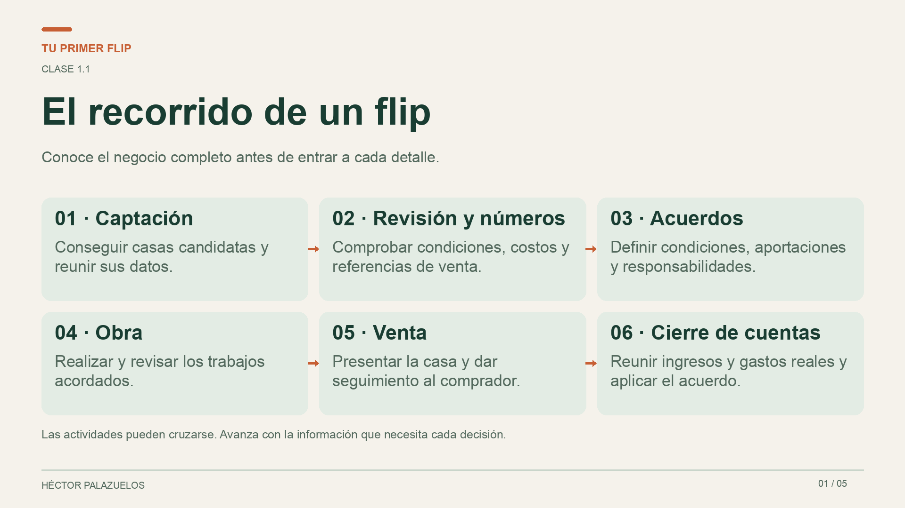
01. El recorrido de un flip
Al explicar «El recorrido de un flip». Sigue el orden de la guía de esta clase.
Aquí seguimos desarrollando tu método, con la forma de explicar del capítulo 1. Abre una clase para leer su guion, su guía y sus pendientes.
Las cuatro clases siguen la forma de explicar que aprobaste. Ya incorporamos que llevas la operación y que tu arquitecto se encarga de las remodelaciones. Faltan tus acuerdos de aportaciones y reparto.
Hay seis clases en borrador. Falta revisar la voz, tus conversaciones reales y las opciones de Meta Ads en tu cuenta.
Siete clases con guion, ejemplos y ejercicios: dónde buscar inversionistas, cómo acercarte, presentar la oportunidad y preparar los acuerdos. Falta incorporar cómo lo haces tú.
El método completo de Héctor, desde conseguir una oportunidad hasta cerrar las cuentas. El último capítulo reúne lo aprendido con el flip que él elija.
Capítulo 1: 4 clases; Guiones desarrollados; formato aprobado. Capítulo 2: 6 clases; Guiones en borrador. Capítulo 3: 6 clases; Por desarrollar. Capítulo 4: 7 clases; Siete guiones en borrador; pendientes experiencias y acuerdos de Héctor. Capítulo 5: 5 clases; Por desarrollar. Capítulo 6: 5 clases; Por desarrollar. Capítulo 7: 4 clases; Por desarrollar. Capítulo 8: 3 clases; Por desarrollar. Las grabaciones siguen pendientes.
Guiones desarrollados; formato aprobado
Guía: mapa de la operación y plan personal de arranque.
Guiones en borrador
Guía: ficha de captación, mensajes y registro de seguimiento.
Por desarrollar
Guía: revisión y corrida de números con escenarios.
Siete guiones en borrador; pendientes experiencias y acuerdos de Héctor
Guía: mapa de contactos, mensajes, propuesta, seguimiento y preparación del acuerdo.
Por desarrollar
Guía: alcance, presupuesto, acuerdo y bitácora de obra.
Por desarrollar
Guía: plan de venta, seguimiento de compradores y preparación de cierre.
Por desarrollar
Guía: conciliación y cierre de cuentas.
Por desarrollar
Guía: lectura del caso y aplicación al expediente del alumno.
Capítulo 1 · Cómo funciona mi negocio y cómo empezar
Clase 1.1 · Cómo funciona un flip
3 láminas. Descarga el paquete completo o elige imágenes sueltas. Agrégalas en tu editor después de grabar.

Al explicar «El recorrido de un flip». Sigue el orden de la guía de esta clase.
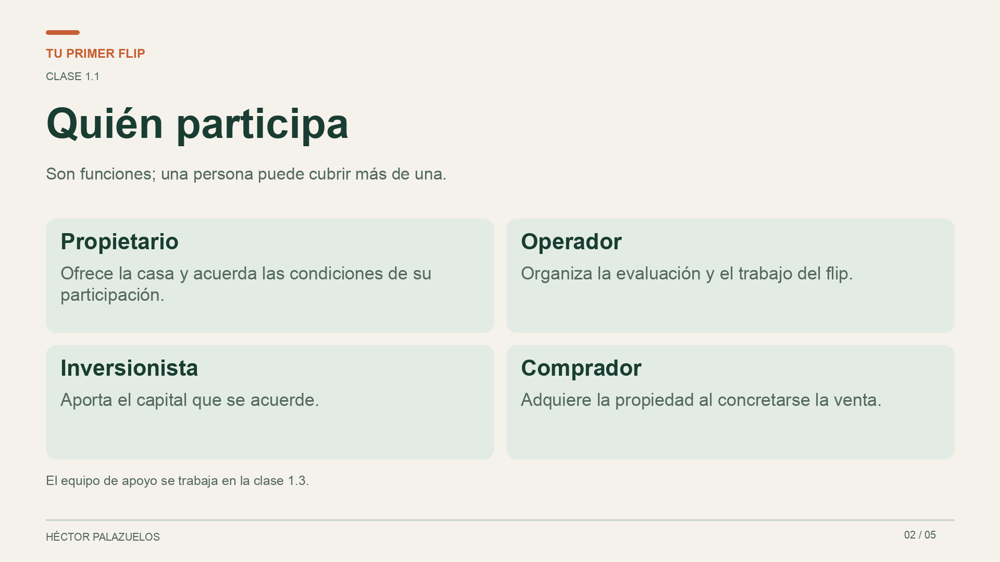
Al explicar «Quién participa». Sigue el orden de la guía de esta clase.
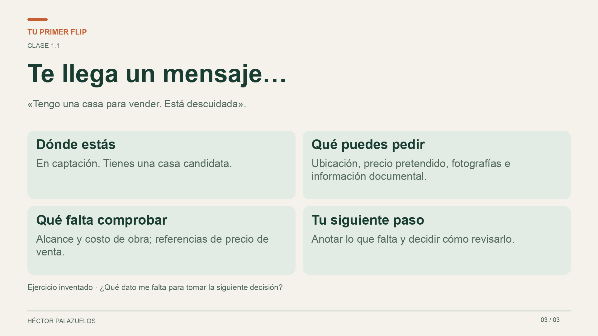
Al explicar «Te llega un mensaje…». Sigue el orden de la guía de esta clase.
Vertical: 1080 × 1920 · Horizontal: 1920 × 1080. El ZIP también incluye SVG editables. Se conserva el estado de revisión del guion.
Soy Héctor Palazuelos. Bienvenido a Tu Primer Flip.
Mira, aquí te voy a enseñar cómo hago este negocio. Desde cómo me llega una casa hasta cómo revisamos los números, organizamos la remodelación y llegamos a la venta. Vamos a ir paso por paso.
Lo que quiero es que entiendas qué estoy viendo cuando digo: «Esta casa sí me interesa». Porque tiene que haber una razón para comprarla y una cuenta que sostenga esa decisión.
A mí me interesa que la operación deje ganancia después de considerar todo lo invertido. Ese es el punto de partida.
Primero vamos a ver el negocio completo. Así, cuando hablemos de anuncios, números, documentos y obra, vas a saber para qué sirve cada cosa.
Al terminar, quiero que puedas explicarlo con tus palabras. Como si se lo contaras a un amigo.
Hacer un flip es comprar una casa, mejorarla y venderla buscando una ganancia. Y para saber si hubo ganancia, tienes que contar todo lo que costó llevarla hasta la venta.
Fíjate: entre el precio al que consigues una casa y el precio al que la vendes hay gastos. La remodelación es uno, pero hay más. Los vamos a ordenar para que puedas hacer la cuenta completa.
Una casa puede verse muy descuidada y necesitar trabajos sencillos. Otra puede verse mejor y tener problemas que requieran una intervención costosa. Las fotos sirven para empezar a conocerla; para definir qué necesita hay que revisarla.
Yo busco casas de nivel medio, bajo o social, y remodelaciones leves. No estoy buscando que todas las operaciones dependan de una obra fuerte. Ese es el perfil que vamos a aprender a identificar.
También busco que los números dejen una utilidad de alrededor del cuarenta al cuarenta y cinco por ciento sobre todo lo invertido. En la siguiente clase vamos a hacer esa cuenta juntos. Es el objetivo que busco al analizar una oportunidad. El resultado final depende de lo que realmente se gaste y de cómo termine la venta.
La primera etapa es la captación. Significa conseguir oportunidades para revisar. En mi caso, lo que más me funciona son los anuncios pagados en Facebook con video. Más adelante vamos a dedicarle un capítulo a esa parte, desde el mensaje del video hasta el seguimiento de los contactos.
Cuando alguien te habla de una casa, tienes una candidata. Necesitas saber dónde está, qué se está ofreciendo y qué información falta. La primera tarea es convertir ese contacto en información que puedas revisar.
Después vienen la revisión y los números. Aquí necesitamos saber qué condiciones tiene la casa, qué hay que aclarar de sus documentos, cuánto podría costar la operación completa y qué precio de venta se puede sustentar con información de la zona.
Si el número solo funciona suponiendo una venta muy alta o una obra demasiado barata, hay algo que revisar. Si falta un dato importante, lo dejas pendiente y buscas cómo comprobarlo.
Luego vienen los acuerdos: qué se acuerda con el dueño, de dónde va a salir el dinero, quién hace cada cosa y cómo va a quedar por escrito. La forma concreta de llevar la operación se desarrolla en su capítulo, con las revisiones que correspondan.
Después viene la obra. Cuando ya están resueltas las condiciones para avanzar, se hacen los trabajos acordados y se revisa cómo van contra el presupuesto. Mi enfoque es la remodelación leve. Vamos a separar lo que se puede observar de lo que necesita revisar alguien que conozca ese trabajo.
La quinta etapa es la venta. Hay que preparar la presentación de la casa, atender a los interesados y llevar el proceso hasta concretar la operación. El precio se tiene que apoyar en el mercado; no basta con sumar a los gastos la ganancia que uno desea.
Y al final cerramos las cuentas. Cuánto entró, cuánto se gastó y cuánto quedó. Con el resultado completo se aplica el acuerdo entre quienes participaron.
Algunas actividades pueden cruzarse: puedes ir conociendo posibles inversionistas mientras buscas casas y estudiar la venta desde la evaluación inicial. El mapa nos sirve para reconocer qué debe estar resuelto en cada decisión.
El propietario es la persona con la que se revisan las condiciones de la casa y de la operación.
El operador es quien organiza el flip. Esa palabra va a aparecer en el curso. Piensa en la persona que reúne la información y coordina los pasos para que la operación avance.
El inversionista aporta el capital que se acuerde para la operación. Su participación y sus condiciones se tienen que definir.
El comprador adquiere la propiedad al final del proceso de venta. Por eso, desde el análisis inicial importa entender qué se está ofreciendo y a qué precio puede tener sentido en esa zona.
Son funciones dentro de la operación. Una persona puede cubrir más de una, según cómo se organice. También participan colaboradores para trabajos concretos; los veremos en la tercera clase.
Te llega un mensaje: «Tengo una casa para vender. Está descuidada y quiero saber si te interesa».
Estás en captación. Puedes pedir información para estudiar la casa: ubicación, qué precio pretende el propietario, fotografías y qué sabe de su situación documental.
Con esa primera información vas a decidir qué necesitas revisar después. Si falta saber qué reparaciones requiere, no puedes dar por hecho el costo de la obra. Si no has estudiado la zona, tampoco tienes sustento para el precio de venta.
Quédate con esta pregunta: «¿Qué dato me falta para tomar la siguiente decisión?».
Abre la guía de esta clase. Vas a encontrar las seis etapas. Escribe qué se hace en cada una y un dato que necesitarías para avanzar.
Después explica el recorrido en voz alta, como si se lo contaras a una persona que nunca ha escuchado hablar de flipping. Hazlo en un minuto. Si te trabas en una parte, ahí tienes una buena pregunta para traer a la sesión.
Ya tenemos el mapa. Ahora vamos a entender qué aporta quien organiza la operación, qué aporta quien pone el capital y de dónde sale realmente la utilidad.
Nombre: ____________________ Fecha: ____________________
Un flip es: ____________________________________________________________
Escribe una frase por casilla. En la última columna anota un dato que necesitas comprobar, no solo «seguir con el siguiente paso».
| Etapa | Qué se hace | Qué dato necesito para avanzar |
|---|---|---|
| Captación | ||
| Revisión y números | ||
| Acuerdos | ||
| Obra | ||
| Venta | ||
| Cierre de cuentas |
| Participante | Qué hace en la operación |
|---|---|
| Propietario | |
| Operador: quien organiza el flip | |
| Inversionista | |
| Comprador |
Ejercicio inventado. Te llega un mensaje de un dueño que quiere vender. Solo tienes una foto de la fachada.
Cuenta el recorrido en voz alta. Al terminar, anota la parte que te costó explicar: ____________________
Mi pregunta para la sesión: ____________________
Completa el mapa y explícalo en un minuto.
Tu guía 1.1 y una explicación oral del recorrido. Puedes grabarte para revisarla.
Si no sabes qué poner en «dato para avanzar», piensa qué te impediría decidir: un costo sin revisar, un documento pendiente o una condición sin acordar.
Anota la duda concreta en tu guía de trabajo. Las respuestas orientativas sirven para revisar después de hacer el ejercicio.
| Etapa | Respuesta de ejemplo | Dato o entrega que ayuda a avanzar |
|---|---|---|
| Captación | Conseguir casas candidatas | Ubicación y condiciones iniciales |
| Revisión y números | Estudiar la casa y el costo completo | Revisiones y estimaciones con respaldo |
| Acuerdos | Acordar condiciones, aportaciones y trabajos | Condiciones documentadas y pendientes resueltos para el paso previsto |
| Obra | Hacer y revisar los trabajos acordados | Avances comprobados y costos actualizados |
| Venta | Presentar la casa y atender interesados | Condiciones de venta y cierre revisadas |
| Cierre de cuentas | Reunir ingresos y gastos reales | Cuenta completa y acuerdo aplicable al resultado |
El dueño ofrece la casa; el operador organiza; el inversionista aporta el capital acordado; el comprador la adquiere al final. Son funciones que pueden combinarse según la operación.
Mensaje con una foto: estás en captación. Puedes pedir ubicación, precio pretendido y más información de la casa y sus documentos. Todavía falta revisar el alcance y costo de la obra. Una foto no confirma que la remodelación sea leve.
Para preparar la clase. Estas notas quedan fuera del guion hablado.
Capítulo 1 · Cómo funciona mi negocio y cómo empezar
Clase 1.2 · Qué aporto yo y qué aporta el inversionista
4 láminas. Descarga el paquete completo o elige imágenes sueltas. Agrégalas en tu editor después de grabar.
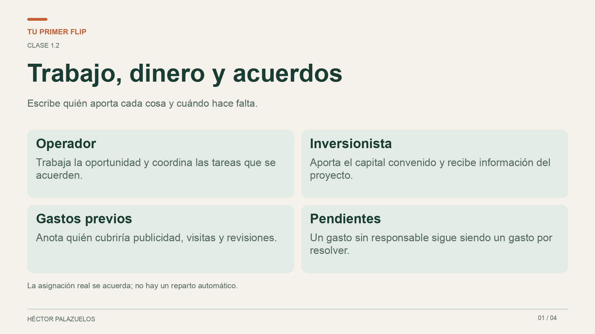
Al explicar «Trabajo, dinero y acuerdos». Sigue el orden de la guía de esta clase.
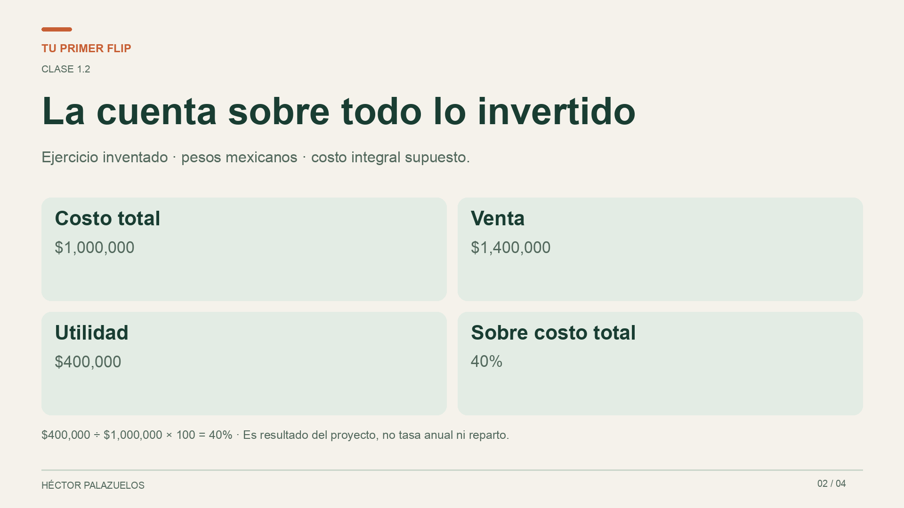
Al explicar «La cuenta sobre todo lo invertido». Sigue el orden de la guía de esta clase.
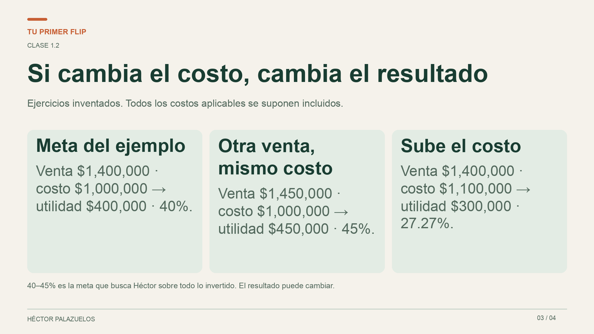
Al explicar «Si cambia el costo, cambia el resultado». Sigue el orden de la guía de esta clase.
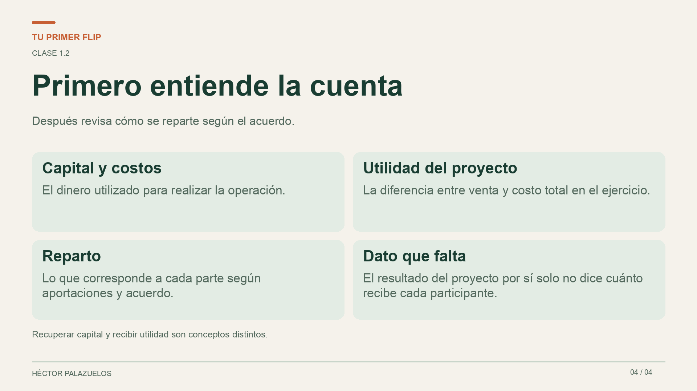
Al explicar «Primero entiende la cuenta». Sigue el orden de la guía de esta clase.
Vertical: 1080 × 1920 · Horizontal: 1920 × 1080. El ZIP también incluye SVG editables. Se conserva el estado de revisión del guion.
Vamos con una duda muy común: «Me interesa hacer un flip, pero no tengo todo el dinero para la casa».
Aquí vamos a ver cómo se organiza una operación con un inversionista.
Mira, hay dos cosas que tienes que juntar: el trabajo para sacar adelante la operación y el dinero para pagar lo que necesita.
La casa se tiene que conseguir y estudiar. Hay que reunir información, preparar los números, coordinar revisiones y dar seguimiento a los acuerdos, la obra y la venta. Ese trabajo tiene que estar a cargo de alguien.
Por otro lado, hacen falta recursos para cubrir los conceptos de la operación. El inversionista puede aportar el capital acordado, pero hay que definir cuánto, para qué y cuándo estará disponible.
Decir «voy a trabajar con un inversionista» es el principio de la conversación. Todavía necesitas mostrar qué operación estás proponiendo y cómo la vas a organizar.
Como operador, te toca trabajar la oportunidad: conseguir información, preparar los números y coordinar lo que acuerdes hacer. También necesitas reconocer cuándo hace falta alguien que sepa revisar algo que tú todavía no dominas.
El inversionista aporta el dinero que se acuerde. Para decidir, necesita entender la operación. Y cuando ya participa, necesita saber cómo van los números y el trabajo.
Ahora imagina que alguien pregunta: «¿Quién paga la publicidad? ¿Quién paga una visita, una revisión o un gasto antes de formalizar?».
Esas preguntas deben quedar resueltas. No puedes suponer que todos los gastos los cubre la otra persona. En tu guía vas a registrar cada concepto, quién se propone que lo cubra, cuándo se necesita y qué falta acordar.
Si todavía no sabes quién paga algo, escribe «pendiente». Ese gasto sigue ahí y hay que resolverlo.
Yo busco que una operación me deje un cuarenta, un cuarenta y cinco por ciento sobre todo lo invertido. Vamos a ponerle números para que quede claro.
Imagina una operación con un costo total de un millón de pesos. Para este ejercicio vamos a suponer que dentro de ese millón ya está considerado todo lo que cuesta la operación: adquisición, remodelación y los demás gastos que correspondan, hasta el cierre. No es solamente el precio de la casa.
Si la venta fuera de un millón cuatrocientos mil pesos y el costo total se mantuviera en un millón, la diferencia sería de cuatrocientos mil pesos.
Esos cuatrocientos mil serían la utilidad de la operación en este ejemplo.
La cuenta es: cuatrocientos mil de utilidad, divididos entre un millón de costo total. Eso da cero punto cuarenta. Lo multiplicamos por cien y tenemos cuarenta por ciento.
Si la venta fuera de un millón cuatrocientos cincuenta mil y el costo total siguiera siendo un millón, la utilidad sería de cuatrocientos cincuenta mil. Sobre ese millón invertido, equivale al cuarenta y cinco por ciento.
Fíjate bien en esto: el porcentaje lo saco sobre todo lo invertido. Si divides entre el precio de venta, obtienes otro porcentaje. Aquí estamos aprendiendo el criterio sobre costo total que yo te expliqué.
Y otro detalle: hablamos del resultado de toda la operación. Todavía no estamos hablando de cuánto recibe cada participante ni de una tasa anual.
Ahora vamos a cambiar una sola cosa. La venta sigue siendo de un millón cuatrocientos mil pesos, pero el costo total sube a un millón cien mil.
La diferencia baja a trescientos mil pesos. Si divides esos trescientos mil entre un millón cien mil, el resultado es aproximadamente veintisiete punto tres por ciento.
Se vendió al mismo precio, pero quedó menos porque costó más. Por eso hay que actualizar la cuenta cuando cambia un gasto. Ahí se ve si la operación sigue dando el resultado que buscas.
En una operación real hay que considerar los gastos que correspondan: adquisición, obra, comercialización, mantenimiento durante el proyecto, honorarios, impuestos y financiamiento, si lo hay. El desglose y las cantidades se estudian con los datos de esa operación y con quien corresponda revisar cada concepto.
Para planear también puedes reservar recursos para imprevistos. Al cerrar cuentas, distingues lo que efectivamente se gastó de lo que quedó disponible; un dinero reservado que no se usó no se convierte por sí solo en un gasto.
El cuarenta o cuarenta y cinco por ciento es el objetivo que busco. La estimación puede cambiar y también puede haber pérdidas. Por eso vamos a aprender a revisar escenarios y a sostener los números con datos.
Regresemos al ejemplo del millón invertido y los cuatrocientos mil de utilidad.
El millón corresponde al dinero que costó realizar la operación. Los cuatrocientos mil son la diferencia que quedó en ese ejercicio. Recuperar capital y obtener utilidad son conceptos distintos.
Ahora falta ver cuánto le toca a cada quien.
Eso sale del acuerdo que hayan hecho. Saber que el proyecto produjo cuatrocientos mil no te dice, por sí solo, cuánto recibe el operador y cuánto el inversionista. Tampoco significa que el inversionista recibió un cuarenta por ciento sobre su propia aportación.
En el capítulo de acuerdos vamos a desarrollar esa separación. Aquí quiero que la reconozcas desde el principio para que puedas explicar tus números con claridad.
En la guía tienes una operación de práctica que cuesta en total ochocientos mil pesos y se vende en un millón ciento veinte mil.
Calcula primero la utilidad. Después divide esa utilidad entre los ochocientos mil y multiplícala por cien.
Luego modifica el costo total a novecientos mil, manteniendo la misma venta. Compara los resultados y escribe qué cambió.
Finalmente completa la tabla de aportaciones. Puedes proponer una distribución para practicar, pero marca qué necesitarías acordar antes de contar con esos recursos.
Con esto ya separaste tres cosas: el trabajo, el dinero que se pone y la utilidad que queda. En la siguiente clase vamos a organizar a las personas que ayudan a realizar ese trabajo.
Nombre: ____________________ Fecha: ____________________
Son ejercicios inventados en pesos mexicanos. El costo total de cada fila supone que ya incluye todos los costos aplicables hasta el cierre. No son presupuestos reales.
Utilidad = venta − costo total.
Porcentaje sobre lo invertido = utilidad ÷ costo total × 100.
| Ejercicio | Costo total | Venta | Utilidad | Porcentaje sobre costo |
|---|---|---|---|---|
| A | $800,000 | $1,120,000 | ||
| B: subió el costo | $900,000 | $1,120,000 |
Qué cambió entre A y B: ____________________
Para practicar un poco más: con un costo total de $800,000, ¿qué utilidad representaría el 45% y qué venta necesitarías en este ejercicio? ____________________
Esa venta es un resultado matemático. En una casa real tendrías que comprobar si el mercado la sostiene.
En el ejercicio A:
Propón una distribución para practicar. Si no hay un acuerdo, escribe «pendiente».
| Trabajo o recurso | Quién se propone que lo aporte | Cuándo hace falta | Qué falta acordar |
|---|---|---|---|
| Buscar y evaluar casas | |||
| Publicidad y gastos previos | |||
| Capital de la operación | |||
| Coordinación de obra y venta | |||
| Registro de gastos |
La diferencia entre lo que cuesta una casa y lo que cuesta toda la operación es: ____________________
La meta que Héctor busca es 40–45% sobre todo lo invertido. Es una meta de selección de la operación, no un reparto ni un resultado garantizado.
Mi pregunta para la sesión: ____________________
Resuelve las cuentas y propón quién aportaría cada recurso.
Tu guía 1.2 con las operaciones escritas, incluida la división que usaste.
Si obtuviste un porcentaje distinto, revisa qué pusiste debajo de la división. En esta clase la base es todo lo invertido.
Anota la duda concreta en tu guía de trabajo. Las respuestas orientativas sirven para revisar después de hacer el ejercicio.
Todos los casos son ejercicios inventados en MXN. El costo indicado supone incluidos todos los costos aplicables hasta el cierre.
| Ejercicio | Venta | Costo total | Utilidad | Utilidad ÷ costo × 100 |
|---|---|---|---|---|
| Ejemplo de clase: 40% | $1,400,000 | $1,000,000 | $400,000 | 40% |
| Ejemplo de clase: 45% | $1,450,000 | $1,000,000 | $450,000 | 45% |
| Ejemplo de clase: aumenta el costo | $1,400,000 | $1,100,000 | $300,000 | 27.27% |
| Guía A | $1,120,000 | $800,000 | $320,000 | 40% |
| Guía B | $1,120,000 | $900,000 | $220,000 | 24.44% |
Práctica adicional: 45% de $800,000 son $360,000. La venta del ejercicio sería $1,160,000. El mercado real debe sustentar un precio; esta cuenta por sí sola no lo demuestra.
Reparto: en la guía A conoces $800,000 de costo y $320,000 de utilidad. No puedes deducir cuánto le toca a cada participante sin conocer aportaciones y acuerdo. Recuperación del capital y utilidad son conceptos separados. Estos porcentajes no son tasas anuales.
Error frecuente: $400,000 ÷ $1,400,000 = 28.57% sobre venta. Esa es otra base de cálculo. El criterio confirmado de Héctor usa todo lo invertido.
Reserva para imprevistos: en la planeación se separa el dinero previsto de los costos esperados. Al cierre se cuentan los gastos reales; una reserva no utilizada no se registra automáticamente como gasto.
Para preparar la clase. Estas notas quedan fuera del guion hablado.
Capítulo 1 · Cómo funciona mi negocio y cómo empezar
Clase 1.3 · Con quién trabajo
3 láminas. Descarga el paquete completo o elige imágenes sueltas. Agrégalas en tu editor después de grabar.
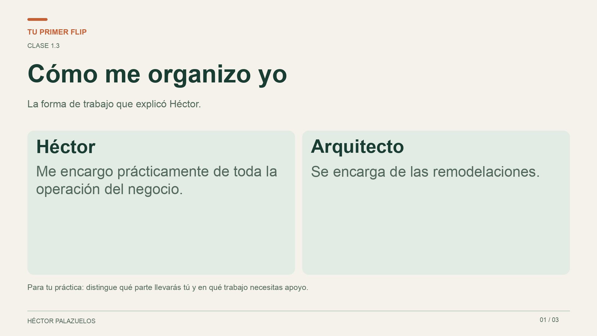
Al explicar «Cómo me organizo yo». Sigue el orden de la guía de esta clase.
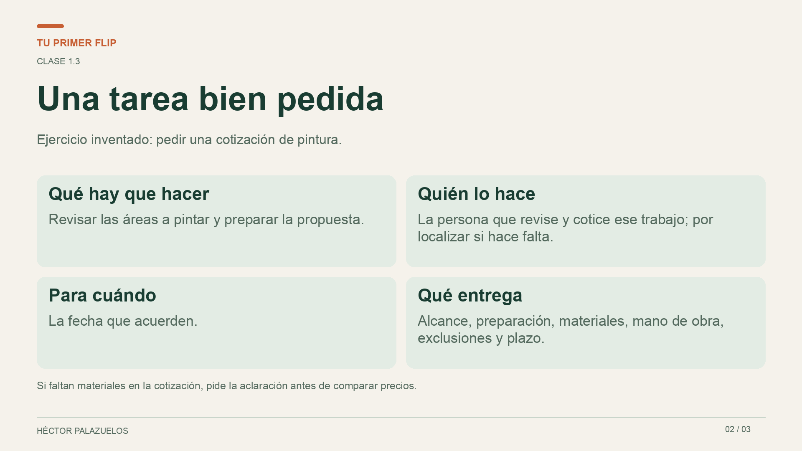
Al explicar «Una tarea bien pedida». Sigue el orden de la guía de esta clase.
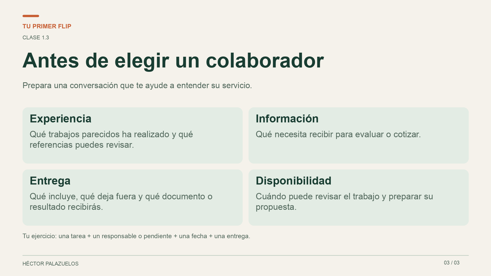
Al explicar «Antes de elegir un colaborador». Sigue el orden de la guía de esta clase.
Vertical: 1080 × 1920 · Horizontal: 1920 × 1080. El ZIP también incluye SVG editables. Se conserva el estado de revisión del guion.
Ya viste cómo funciona el negocio y de dónde puede salir el dinero. Ahora te voy a explicar cómo me organizo yo y en qué parte me apoyo en otra persona.
Mira, yo me encargo prácticamente de toda la operación. Tengo un arquitecto que se encarga de las remodelaciones. Así es como trabajo: yo llevo el negocio y me apoyo en él para esa parte.
Quiero que entiendas esa diferencia desde el principio. Llevar una operación implica tener claro qué estás buscando, qué información necesitas, si los números hacen sentido y qué falta para avanzar. La remodelación es una parte de todo ese recorrido.
Por eso, cuando digo que me encargo del negocio, no significa que yo haga personalmente cada trabajo de la remodelación. Para esa parte cuento con el arquitecto.
Vamos a ponerlo sencillo. De un lado está la operación completa: conseguir la oportunidad, reunir la información, hacer los números, preparar los acuerdos, llevar la venta y ordenar las cuentas. Ese es el recorrido del negocio que estamos aprendiendo.
Dentro de ese recorrido está la remodelación. En mi caso, esa parte la lleva el arquitecto. Para estudiar una casa necesitas entender qué trabajo requiere y cómo influye ese trabajo en los números de la operación.
Esto te sirve para empezar a organizarte. Anota qué parte vas a llevar tú y dónde necesitas apoyo. Una misma persona puede llevar varias tareas. Lo importante es que una actividad no se quede en el aire porque todos pensaron que la haría alguien más.
También habrá preguntas que necesiten una revisión especializada. Si estás revisando documentos o temas contables, ubica qué necesitas consultar con el profesional correspondiente. Llevar el negocio también implica reconocer qué información te falta para tomar una decisión.
Más adelante vamos a desarrollar cómo organizar la remodelación. Aquí quiero que te quedes con la idea principal: tienes que entender el recorrido completo y dejar claro quién se encarga del trabajo que apoyará tu operación.
Te propongo una tabla muy sencilla: qué hay que hacer, quién lo hace, para cuándo y qué te entrega. Cuatro columnas. Vamos a llenarlas con un ejemplo.
Vamos a usar un ejemplo inventado. Necesitas cotizar la pintura de una casa.
Si solo pides «¿cuánto me cobras por pintarla?», te pueden responder con una cantidad sin aclarar qué incluye. Todavía no sabes bien qué estás pagando.
Para preparar una solicitud más clara, puedes anotar qué áreas se quieren revisar, qué preparación de superficies hay que considerar, si el presupuesto incluye materiales y mano de obra, qué trabajos quedan fuera y cuánto tiempo se estima.
La persona que revise el trabajo te dirá qué más necesita para cotizar. Tú necesitas una propuesta que puedas entender y comparar.
En la tabla escribirías: tarea, cotizar pintura; responsable, el arquitecto o la persona que evaluará ese trabajo; fecha, la que acuerden; entrega, presupuesto con alcance, inclusiones y exclusiones.
Esa misma lógica sirve para otras actividades. Si alguien estudia precios de la zona, necesitas conocer las referencias que usó. Si alguien registra un gasto, necesitas el concepto, el importe y su respaldo.
Ahora imagina que recibes una cotización con un precio total, pero no dice si incluye materiales.
Falta ese dato. Pídelo y anótalo antes de comparar esa cotización con otra.
Si después cambia el trabajo solicitado, registra qué cambió y qué efecto tiene en costo y tiempo. Así puedes revisar la nueva información con las personas que deban decidir.
Al revisar, debes poder decir: «¿Qué pedimos? ¿Qué recibimos? ¿Qué falta resolver?».
En tu guía vas a hacer una lista inicial de personas o servicios por localizar. Puedes empezar con los que ya conoces y dejar pendientes los demás.
Cuando hables con alguien, estas preguntas te ayudarán a entender su servicio: qué trabajos realiza, qué información necesita, qué incluye su propuesta, qué entrega y cuál es su disponibilidad.
Según la actividad, también querrás revisar experiencia en trabajos parecidos y referencias que puedas comprobar. La forma de elegir y contratar a cada colaborador se desarrolla con más detalle cuando lleguemos a esa etapa.
Si hoy no conoces a un contratista o a un contador, puedes escribir «por localizar». Tu tarea consiste en reconocer qué apoyo necesitas y cómo vas a buscarlo.
Primero escribe en tu guía cómo trabajo yo: llevo prácticamente toda la operación y el arquitecto se encarga de las remodelaciones. Después completa tu propio mapa con las seis áreas del negocio. En cada una indica qué podrías hacer tú, qué necesitarías encargar y qué resultado esperas recibir.
Elige una tarea y escríbela completa con responsable, fecha y entrega. Si todavía no tienes a la persona, deja claro ese pendiente.
El ejercicio te ayuda a convertir una idea general, como «voy a organizar un flip», en trabajos concretos que se pueden revisar.
En la siguiente clase vamos a juntar todo: la zona en la que quieres trabajar, el perfil de casa que vas a estudiar, tus pendientes y la primera acción que vas a preparar.
Nombre: ____________________ Fecha: ____________________
Héctor se encarga prácticamente de toda la operación. Cuenta con un arquitecto que se encarga de las remodelaciones.
| Quién | Responsabilidad confirmada |
|---|---|
| Héctor | Lleva prácticamente toda la operación del negocio. |
| Arquitecto | Se encarga de las remodelaciones. |
Explícalo con tus palabras: ¿qué diferencia hay entre llevar el negocio y encargarse de la remodelación? ____________________
Ahora aplica la idea a tu situación. Este mapa es tu propuesta de organización; no es una lista de empleados de Héctor. Si aún no tienes a alguien, escribe «por localizar». Si necesitas aprender más antes de hacer una tarea, anótalo.
| Trabajo | Qué puedo hacer yo | Qué apoyo necesito | Qué necesito recibir |
|---|---|---|---|
| Atender contactos y guardar datos | |||
| Reunir referencias y costos | |||
| Revisar documentos y acuerdos | |||
| Definir y ejecutar la obra | |||
| Atender interesados en la venta | |||
| Registrar gastos y cerrar cuentas |
Ejercicio inventado: vas a pedir una cotización de pintura. Completa la solicitud para que quien la reciba sepa qué revisar.
Si la propuesta solo dice un precio y no aclara materiales, mi siguiente paso sería: ____________________
Servicio o persona que necesito localizar: ____________________
Tres preguntas que le haría antes de decidir si me sirve su propuesta:
Mi pregunta para la sesión: ____________________
Explica cómo se organiza Héctor, haz tu propio mapa de responsabilidades y redacta una solicitud de cotización.
Tu guía 1.3, con al menos una tarea que indique responsable, fecha y entrega.
Si una casilla solo dice «ayudarme», cámbiala por algo que puedas recibir y revisar: una cotización desglosada, referencias de precio o un registro de gastos.
Anota la duda concreta en tu guía de trabajo. Las respuestas orientativas sirven para revisar después de hacer el ejercicio.
Modelo confirmado de Héctor: él se encarga prácticamente de toda la operación; un arquitecto se encarga de las remodelaciones. No deducir de esa respuesta quién contrata trabajadores, compra materiales o autoriza cada gasto: esos detalles todavía no se han explicado.
Una solicitud válida puede decir: «Revisar las áreas a pintar y entregar una cotización que separe preparación, materiales y mano de obra; indicar exclusiones y plazo estimado». Se añade responsable y fecha acordada o propuesta.
Si falta aclarar materiales, la siguiente acción es pedir la aclaración. Dos cantidades sin el mismo alcance no permiten una comparación directa.
No hay una distribución universal del equipo. La respuesta sirve si cada trabajo tiene responsable o pendiente, se reconoce el apoyo necesario y la entrega se puede comprobar.
Para preparar la clase. Estas notas quedan fuera del guion hablado.
Capítulo 1 · Cómo funciona mi negocio y cómo empezar
Clase 1.4 · Cómo empieza el alumno
3 láminas. Descarga el paquete completo o elige imágenes sueltas. Agrégalas en tu editor después de grabar.
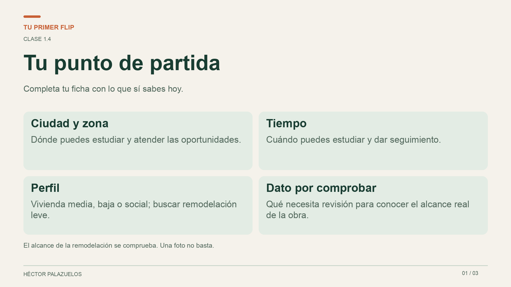
Al explicar «Tu punto de partida». Sigue el orden de la guía de esta clase.
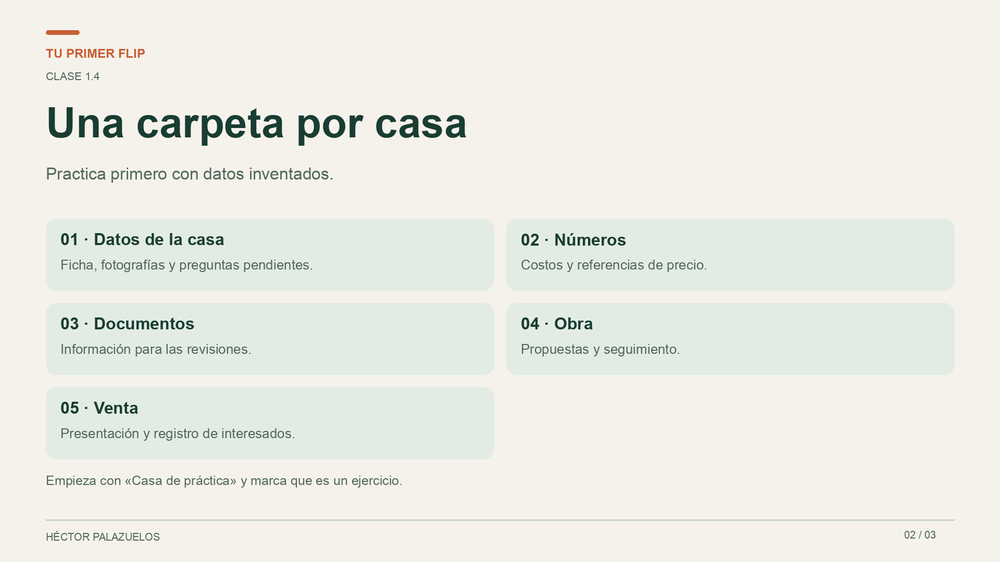
Al explicar «Una carpeta por casa». Sigue el orden de la guía de esta clase.
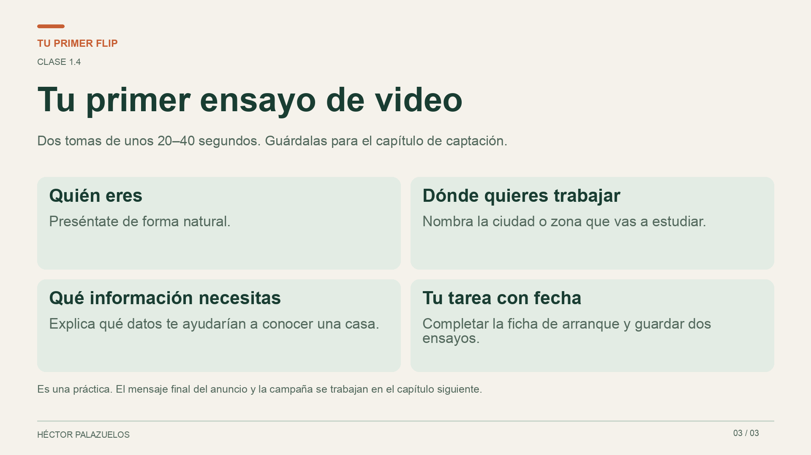
Al explicar «Tu primer ensayo de video». Sigue el orden de la guía de esta clase.
Vertical: 1080 × 1920 · Horizontal: 1920 × 1080. El ZIP también incluye SVG editables. Se conserva el estado de revisión del guion.
Ya conoces las etapas del negocio. Ya sabes que el trabajo y el capital son aportaciones distintas, y viste cómo organizar las responsabilidades.
Ahora vamos a aterrizarlo. Quiero que salgas de esta clase con una zona elegida, tu carpeta y una tarea con fecha. Algo que puedas empezar a hacer.
Vamos a preparar el terreno para el capítulo de captación. Ahí desarrollaremos los anuncios de Facebook con video, que son el canal que más me funciona para conseguir casas.
Empieza por escribir tu ciudad y una zona que puedas atender. Piensa en algo práctico: cómo vas a conocer las casas, cuánto tiempo te tomaría trasladarte y cuándo podrías dar seguimiento.
Empieza por conocer esa zona. Junta la información en un mismo lugar y después podrás compararla con otras.
Anota cuánto tiempo sí puedes dedicarle. Por ejemplo, puedes separar un momento para estudiar el material y otro para organizar tus ejercicios. Usa tu disponibilidad real para poner una fecha a la tarea que vas a realizar.
Ahora escribe el perfil de vivienda. Mi enfoque son casas de nivel medio, bajo o social y remodelaciones leves. En esta etapa vas a aprender a reconocer candidatas y a identificar qué información necesitas para evaluarlas.
«Remodelación leve» es el tipo de trabajo que buscamos, pero una foto no confirma el alcance. Si no sabes qué provoca una mancha o una grieta, registra la duda para que se revise. No la conviertas en una cifra de presupuesto sin información.
También vamos a estudiar cómo se determina un precio de venta con datos de la zona. Un precio que viste anunciado es una referencia inicial; por sí solo no demuestra cuánto pagó un comprador por una casa.
Haz una carpeta por casa. Te propongo esta forma de ordenarla. Puedes identificarla con un número y la zona. Dentro separa cinco apartados: datos de la casa, números, documentos, obra y venta.
En datos de la casa guardas la información inicial, las fotografías disponibles y las preguntas pendientes. En números, el presupuesto y las referencias de precio cuando los desarrolles. En documentos, la información necesaria para las revisiones. En obra, las propuestas y el seguimiento. En venta, la presentación y el registro de interesados cuando corresponda.
Al principio algunos apartados estarán vacíos. Los vas a ir llenando conforme avancemos.
Para practicar hoy puedes crear una carpeta llamada «Casa de práctica». Usa datos inventados y escribe que es un ejercicio. Esto te permite aprender la organización antes de trabajar con información de una operación real.
Además, prepara una lista corta de pendientes: qué dato necesitas, quién podría ayudarte a obtenerlo y cuál sería el siguiente paso. Así evitas confundir una suposición con algo que ya comprobaste.
Como mi captación parte de anuncios con video, te propongo que tu primera práctica sea grabar un ensayo breve con tu teléfono.
Quiero que te escuches. Guarda esta primera toma. En el capítulo siguiente vamos a trabajar el mensaje del anuncio y la configuración de la campaña.
Prepara tres ideas: quién eres, en qué zona quieres estudiar oportunidades y qué tipo de información te gustaría recibir de una persona que piensa vender una casa.
Puedes empezar con algo así, usando tu nombre y tu ciudad:
«Soy Ana y estoy aprendiendo a evaluar oportunidades de vivienda en mi ciudad. Estoy estudiando casas que puedan necesitar una remodelación leve. Para conocer una casa necesitaría saber su ubicación, sus características y las condiciones en que se ofrece».
Este es un ensayo de presentación para el curso. En el capítulo de captación lo convertiremos en un mensaje adecuado a tu situación y al anuncio que se prepare.
Al escucharte, revisa si se entiende de qué hablas, si lo puedes decir de manera natural y si afirmas algo que todavía no puedes respaldar. Haz una segunda toma usando palabras que tú sí utilizarías al conversar.
Decir «voy a empezar en bienes raíces» es muy amplio. Vamos a convertirlo en una actividad que puedas terminar y revisar.
Un ejemplo sería: «En mi siguiente sesión de trabajo voy a completar mi ficha de arranque y grabar dos tomas de un ensayo de video».
Pon tu fecha. El resultado será una ficha y dos grabaciones. Podrás revisarlas y saber qué necesitas mejorar.
También puedes identificar un servicio que te falte, como quien pueda revisar un presupuesto de obra. Anota cómo localizarías a esa persona y qué le preguntarías. Esa sería otra actividad concreta, en el momento que tú programes.
El orden de práctica que te propongo es: elegir la zona, preparar tu carpeta, anotar tus dudas y grabar el ensayo. La duración de una operación real dependerá de sus circunstancias; las fechas de estas tareas sirven para organizar tu aprendizaje.
Antes de pasar al capítulo de captación, revisa tus cuatro hojas.
La primera debe mostrarte el recorrido de un flip. La segunda, cómo separar aportaciones y calcular la utilidad sobre el costo total. La tercera, quién tendría que hacer cada trabajo y qué necesitas recibir. La cuarta, tu zona y tu siguiente acción con fecha.
Si algo sigue pendiente, déjalo escrito. Eso nos permitirá trabajar la duda con precisión.
Con estas cuatro hojas ya tienes por dónde empezar: el mapa del negocio, la cuenta de utilidad, los responsables y tu siguiente paso.
En el capítulo que sigue empezamos con la captación: cómo preparar el mensaje, los anuncios de Facebook con video y el seguimiento para reunir información sobre las casas.
Nombre: ____________________ Fecha: ____________________
Ciudad: ____________________
Zona que puedo atender y por qué: ____________________
Tiempo que sí puedo dedicar: ____________________
Tipo de vivienda que voy a estudiar: ____________________
Qué necesito comprobar para saber si la obra sería leve: ____________________
Crea «Casa de práctica» y estos cinco apartados. Usa datos inventados; señala que es un ejercicio.
| Dato que me falta | Cómo lo buscaría o quién puede ayudar | Siguiente paso |
|---|---|---|
Escribe tres ideas, con tus palabras:
Graba dos tomas de práctica de unos 20–40 segundos. Guárdalas para trabajar el anuncio en el capítulo de captación.
Qué mejoré en la segunda toma: ____________________
| Qué voy a hacer | Fecha elegida por mí | Qué voy a tener listo |
|---|---|---|
La fecha organiza mi tarea de aprendizaje; no es una fecha de compra o venta prometida.
Mi pregunta para la sesión: ____________________
Prepara tu carpeta, completa tu plan y graba dos ensayos de video.
Tu guía 1.4, la carpeta «Casa de práctica» y dos tomas guardadas para la siguiente clase de captación.
Si tu acción dice «hacer un flip», elige el paso que sí puedes completar ahora: llenar la ficha de arranque y guardar tu ensayo.
Anota la duda concreta en tu guía de trabajo. Las respuestas orientativas sirven para revisar después de hacer el ejercicio.
Ejemplo válido: «En la fecha que elegí completaré mi ficha de arranque y guardaré dos ensayos de video en mi carpeta de práctica».
La zona debe ser identificable, el tiempo debe corresponder a la disponibilidad del alumno y los datos inventados deben estar marcados como ejercicio. No hace falta publicar un anuncio para completar esta tarea.
Sin mirar las respuestas, explica:
Respuestas esperadas: captación, revisión y números, acuerdos, obra, venta y cierre; $400,000 de utilidad; falta conocer el acuerdo de reparto y aportaciones; tarea, responsable, fecha y entrega; una acción concreta del plan propio.
Si una respuesta queda poco clara, vuelve a ese apartado y repite el ejercicio. El objetivo es que puedas explicarlo con tus palabras.
Para preparar la clase. Estas notas quedan fuera del guion hablado.
Capítulo 2 · Cómo capto casas con anuncios y elijo cuáles revisar
Clase 2.1 · Qué casas busco y qué tiene que dejarme la operación
2 láminas. Descarga el paquete completo o elige imágenes sueltas. Agrégalas en tu editor después de grabar.
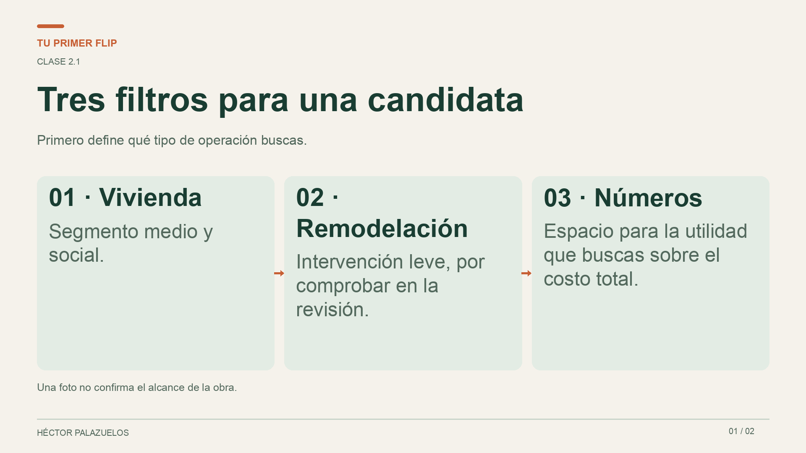
Al explicar los tres filtros de la clase.
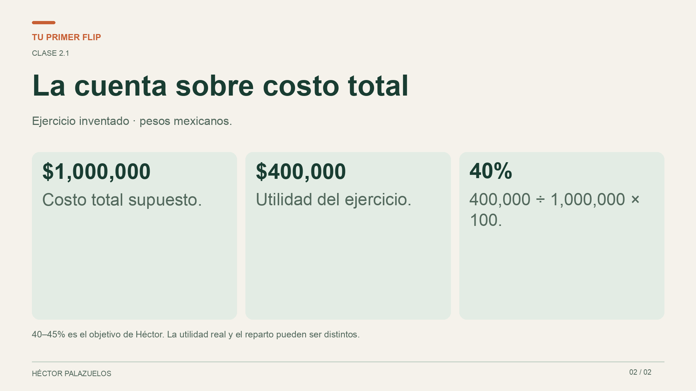
Cuando digas «Imagina una operación cuyo costo total termina en un millón de pesos».
Vertical: 1080 × 1920 · Horizontal: 1920 × 1080. El ZIP también incluye SVG editables. Se conserva el estado de revisión del guion.
Antes de hacer el anuncio quiero que tengas claro qué tipo de casa estás buscando. Si no defines eso, te pueden llegar muchos mensajes y vas a terminar revisando propiedades que no son para tu forma de trabajar.
Yo me enfoco en casas del segmento medio y social. Busco casas donde pueda hacer una remodelación leve. Eso forma parte de cómo elijo mis operaciones: qué trabajo necesita la casa y cuánto espacio dejan los números después de hacerlo.
Una casa puede verse descuidada y necesitar cambios relativamente sencillos; otra puede traer trabajos mucho más grandes de lo que se ve en una foto. Por eso vamos a anotar qué sabemos y qué falta revisar. En esta primera parte identificamos candidatas. Después hacemos la revisión y la cuenta completa.
En mi mente busco una utilidad de alrededor de 40 a 45 por ciento sobre todo lo invertido. Vamos a ponerle números para que se entienda qué significa.
Imagina una operación cuyo costo total termina en un millón de pesos. Si después de vender queda una utilidad de cuatrocientos mil pesos, esa utilidad equivale a cuarenta por ciento del costo. Si quedan cuatrocientos cincuenta mil, equivale a cuarenta y cinco por ciento.
Ese es el criterio que quiero que entiendas: comparo lo que puede quedar con todo lo que necesita la operación. El precio de compra por sí solo no me da la respuesta. Tengo que considerar los demás costos.
En el siguiente módulo vamos a abrir esa cuenta y ver de dónde sale cada cantidad. Aquí quiero que te quedes con tres filtros: el tipo de vivienda, una remodelación que corresponda a mi forma de trabajar y espacio suficiente en los números para la utilidad que busco.
El porcentaje es mi objetivo al buscar. El resultado final se conoce con las cuentas de la operación. Además, después debemos ver cómo se reparte según el acuerdo con el inversionista; eso tiene su propia explicación.
Abre tu guía y escribe el perfil de casa que vas a buscar. Al lado anota qué información tendrías que pedir para saber si una propiedad se parece a ese perfil.
| Dato | Mi respuesta |
|---|---|
| Tipo de vivienda | |
| Zonas que puedo atender | |
| Qué entiendo por remodelación leve y qué falta consultar | |
| Precio de compra estimado | |
| Precio de venta estimado y fuente | |
| Datos pendientes para evaluar la oportunidad |
Criterio de Héctor confirmado: busca 40–45% de utilidad sobre todo lo invertido. El ejemplo de $1,000,000 de costo y $400,000 de utilidad equivale a 40%. La cuenta completa se trabaja en el módulo 3.
Completa la sección A de la guía con los datos o el ejercicio de esta clase.
Para preparar la clase. Estas notas quedan fuera del guion hablado.
Las seis clases tienen guion de trabajo y tarea; estos pendientes identifican lo que todavía no puede presentarse como práctica comprobada de Héctor o configuración verificada de su cuenta.
pendiente confirmar si el límite de $1,600,000 es precio de compra o de venta. Se incorpora una vez aclarado. Pedir después ejemplos de trabajos que Héctor considera remodelación leve y cuáles le hacen descartar la operación. No inventar un catálogo de obra como experiencia propia.
Capítulo 2 · Cómo capto casas con anuncios y elijo cuáles revisar
Clase 2.2 · El video con el que empiezo a captar
2 láminas. Descarga el paquete completo o elige imágenes sueltas. Agrégalas en tu editor después de grabar.
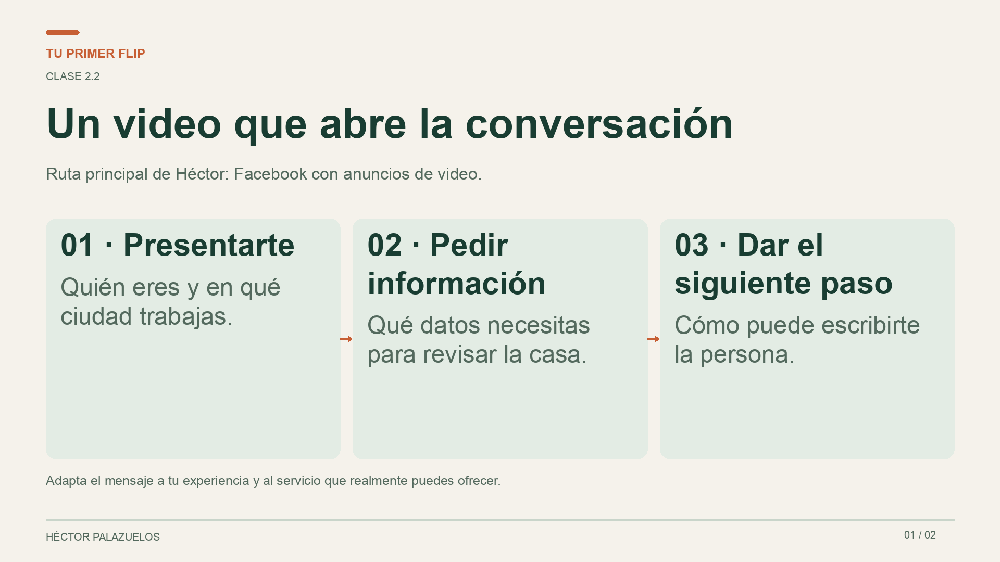
Cuando dividas el anuncio en tres partes.
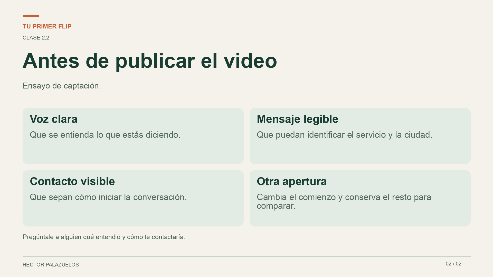
Al explicar cómo revisar el video y preparar una segunda versión.
Vertical: 1080 × 1920 · Horizontal: 1920 × 1080. El ZIP también incluye SVG editables. Se conserva el estado de revisión del guion.
La forma que más me funciona para captar casas es Facebook, usando anuncios con video. Esa va a ser la ruta que te voy a enseñar primero.
Vamos a preparar un video que una persona pueda entender rápido: quién está hablando, en qué zona trabaja y para qué puede escribirle. El anuncio abre una conversación. En esa conversación vamos a conocer la casa y la situación del propietario.
Para este ejercicio lo armamos en tres partes. Primero presento el servicio y la ciudad. Después explico qué información necesito para empezar a revisar la propiedad. Al final doy una instrucción clara para que la persona sepa qué hacer.
Te voy a mostrar un texto de práctica. Lo ajustas a tu ciudad y a lo que de verdad puedes ofrecer. Si todavía estás empezando, tu presentación debe corresponder con eso. Tu experiencia se va construyendo con el trabajo que realizas.
Grábalo con el celular, con la voz entendible y el mensaje escrito de forma legible. Si lo vas a usar en Reels, prepara una versión vertical y revisa que los controles de la aplicación no tapen las palabras importantes.
Antes de subirlo, enséñaselo a alguien y pídele que te diga qué entendió. Debería poder explicar qué servicio ofreces y cómo contactarte. Si tiene que preguntarte para qué era el video, ajusta el mensaje.
Luego puedes preparar una segunda versión con otro comienzo y conservar el resto. Así tienes una diferencia concreta para observar. No necesitamos cambiar a la vez toda la campaña para aprender qué mensaje genera conversaciones útiles.
Soy Héctor Palazuelos. Trabajo comprando, remodelando y vendiendo casas. Estoy revisando propiedades en [ciudad] de dueños que estén pensando en vender, incluidas casas que necesitan algunos arreglos. Podemos empezar revisando la colonia, unas fotos y el precio que tienes en mente. Escríbeme por [canal elegido] y platicamos sobre tu casa y los pasos para evaluar una posible operación.
Versión para quien comienza: sustituir la presentación por «Soy [nombre] y estoy buscando una oportunidad para mi primera operación de compra, remodelación y venta en [ciudad]». No copiar la trayectoria de Héctor.
Adaptación sobre crédito, si corresponde al servicio real: «También revisamos opciones de venta para casas con crédito vigente; cada caso requiere revisar su documentación». No presentar el anuncio como comunicación oficial de Infonavit.
Revisión: presentación cierta, voz clara, texto legible y correspondencia entre anuncio y servicio.
Completa la sección B de la guía con los datos o el ejercicio de esta clase.
Para preparar la clase. Estas notas quedan fuera del guion hablado.
Las seis clases tienen guion de trabajo y tarea; estos pendientes identifican lo que todavía no puede presentarse como práctica comprobada de Héctor o configuración verificada de su cuenta.
texto publicitario nuevo, no transcripción de un anuncio exitoso de Héctor. Seleccionar después un video suyo para explicar qué hace y qué resultados documentados tuvo, sin inventar métricas.
Capítulo 2 · Cómo capto casas con anuncios y elijo cuáles revisar
Clase 2.3 · Cómo preparo el anuncio en Meta Ads, incluida la segmentación
2 láminas. Descarga el paquete completo o elige imágenes sueltas. Agrégalas en tu editor después de grabar.
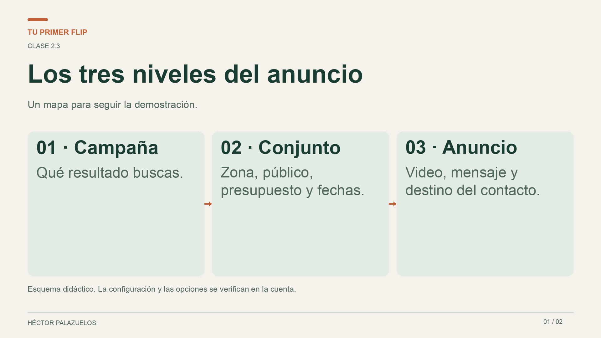
Cuando nombres campaña, conjunto y anuncio.
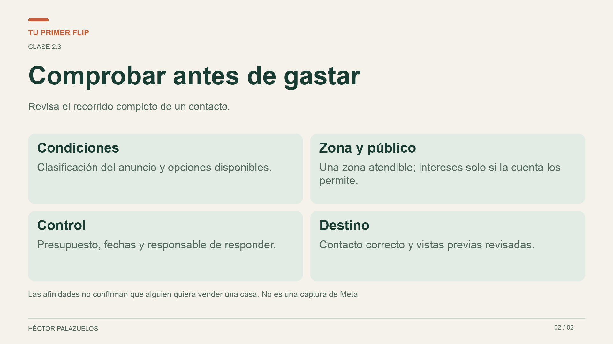
Durante la revisión de segmentación, presupuesto y mensaje inicial.
Vertical: 1080 × 1920 · Horizontal: 1920 × 1080. El ZIP también incluye SVG editables. Se conserva el estado de revisión del guion.
Ya tenemos el video. Ahora vamos a preparar dónde se muestra y cómo vamos a recibir a las personas interesadas.
Lo primero es definir qué queremos que suceda después de que alguien lo vea. En esta demostración queremos una conversación sobre una casa. Usaremos la ruta a WhatsApp como ejemplo y comprobaremos que el número elegido es el que vamos a atender.
En el administrador vas a encontrar tres niveles: campaña, conjunto y anuncio. Para seguir la clase, piensa en tres preguntas: qué resultado buscamos, a qué público podemos llegar y qué mensaje va a ver ese público.
Voy a revisar primero las condiciones que corresponden al anuncio de vivienda en esta cuenta y su país. Eso determina las opciones que podemos usar. Vamos a trabajar con lo que el panel permita bajo esa clasificación.
Después elegimos la zona que podemos atender. Aquí importa la ubicación de las casas que buscamos. Cuando llegue el contacto, vamos a preguntarle dónde está el inmueble: la ubicación que seleccionas para mostrar publicidad no sustituye esa verificación.
Ahora llegamos a los intereses. Lo primero que quiero que entiendas es que una afinidad con vivienda o bienes raíces no nos dice que esa persona quiera vender una casa. Esa información aparece cuando conversa con nosotros.
Vamos a revisar dos posibilidades: un público de la zona sin añadir intereses y, si la configuración lo permite, otro con una selección temática. Son dos ideas para probar. Tenemos que observar cuál genera información útil de propietarios.
En el campo que muestre la cuenta, podemos buscar términos relacionados con vivienda. Aquí reviso lo que realmente aparece y cómo lo describe Meta. Si un término no está disponible, seguimos con una configuración que sí lo esté. Si el panel dice que lo que elegimos es una sugerencia, lo explicamos como una sugerencia; no le atribuimos un límite que la pantalla no establece.
Anota la configuración que usaste. Si después cambia el resultado, necesitas saber qué habías elegido: zona, público, video, presupuesto y fechas.
El presupuesto lo fijamos como una prueba con un monto que podamos controlar. Antes de gastar, dejamos definido cuánto estamos dispuestos a usar y quién va a responder. Una campaña puede traer mensajes y aun así no producir una oportunidad que convenga. Por eso al final vamos a revisar la calidad de las casas que llegaron.
Para terminar, compruebo el video, el texto, el contacto y las vistas previas. Abro el mensaje inicial y leo qué va a recibir la persona. Todo debe ayudarla a dar el siguiente paso que le estamos pidiendo.
| Campo | Configuración o pendiente |
|---|---|
| Nombre de la prueba | |
| Página y cuenta | |
| Objetivo que muestra el panel | |
| Clasificación del anuncio y condiciones revisadas | |
| Canal de contacto y número/cuenta correctos | |
| Zona seleccionada | |
| Público sin intereses añadidos | |
| Términos buscados y opciones realmente disponibles | |
| ¿El panel los llama controles o sugerencias? | |
| Video y texto utilizados | |
| Ubicaciones y vistas previas revisadas | |
| Presupuesto y fechas | |
| Límite de gasto planificado | |
| Quién responde y cuándo revisa mensajes | |
| Fecha de revisión de resultados |
Esta guía puede completarse con un borrador. No es necesario comprar publicidad para realizar el ejercicio.
Completa la sección C de la guía con los datos o el ejercicio de esta clase.
Para preparar la clase. Estas notas quedan fuera del guion hablado.
Las seis clases tienen guion de trabajo y tarea; estos pendientes identifican lo que todavía no puede presentarse como práctica comprobada de Héctor o configuración verificada de su cuenta.
no grabar una receta cerrada de «edad X + radio Y + interés Infonavit» hasta comprobarla en la cuenta y la política aplicable. La investigación pública no validó esas opciones en México. Los términos vivienda, bienes raíces, remodelación e Infonavit son búsquedas de demostración, no un catálogo verificado. La ubicación exacta de los botones debe ajustarse a la interfaz disponible al grabar.
| Paso | Qué mostrar y explicar |
|---|---|
| 1 | Página y cuenta correctas; objetivo compatible con conversaciones. |
| 2 | Clasificación del anuncio y opciones que habilita para la cuenta y el país. |
| 3 | Ruta propuesta: aplicaciones de mensajería → WhatsApp; contacto correcto. |
| 4 | Fechas y presupuesto elegido para el ejercicio. |
| 5 | Zona atendida y público disponible; distinguir controles de sugerencias según las etiquetas visibles. |
| 6 | Buscar términos relacionados con vivienda y registrar los que existan; comparar con la configuración sin intereses añadidos. |
| 7 | Video, texto, ubicaciones disponibles, vista previa y mensaje de entrada. |
| 8 | Revisar y guardar el borrador con nombre reconocible. |
La ruta general de contacto se apoya en la guía de WhatsApp Business. La clasificación de vivienda para esta cuenta mexicana y el catálogo de intereses siguen pendientes de verificación; consultar el registro de investigación.
Capítulo 2 · Cómo capto casas con anuncios y elijo cuáles revisar
Clase 2.4 · Qué información pido cuando llega un contacto
2 láminas. Descarga el paquete completo o elige imágenes sueltas. Agrégalas en tu editor después de grabar.
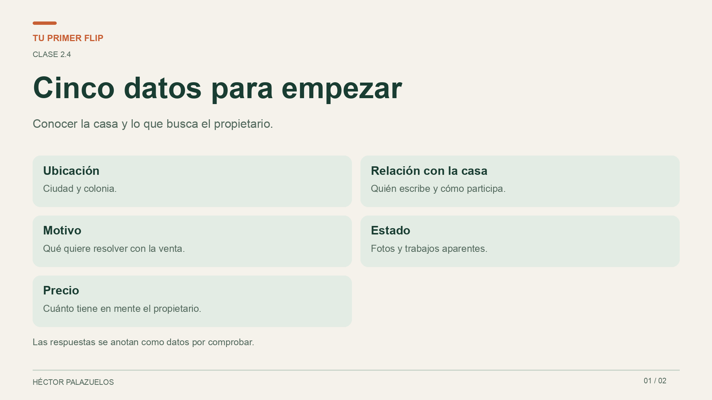
Al presentar las cinco cosas que pedirás al contacto.
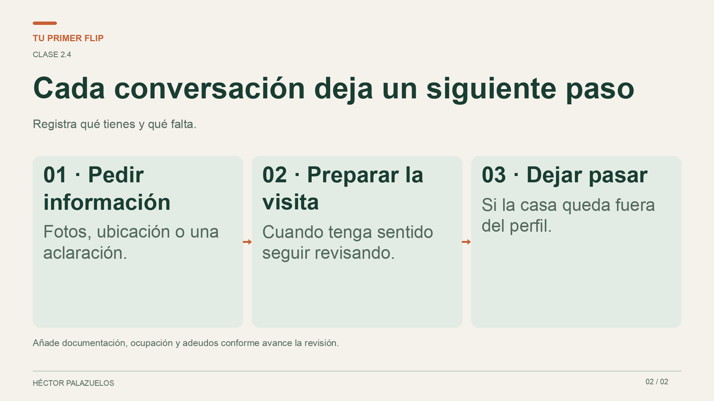
Cuando expliques el objetivo de la conversación.
Vertical: 1080 × 1920 · Horizontal: 1920 × 1080. El ZIP también incluye SVG editables. Se conserva el estado de revisión del guion.
El siguiente trabajo comienza cuando responde una persona. Para poder revisar su casa necesitamos información concreta.
En este ejercicio vamos a empezar por cinco cosas: dónde está la casa, cuál es su relación con la propiedad, qué quiere hacer, cómo está el inmueble y qué precio tiene en mente. Después registramos los datos que falten sobre documentación, ocupación y adeudos, según avance la conversación.
Una respuesta por mensaje es un primer dato. Si alguien nos dice cuánto debe o cuánto mide la casa, lo anotamos con esa fuente. Más adelante lo vamos a contrastar con los documentos que correspondan.
El objetivo de esta conversación es decidir cuál es el siguiente paso útil. Puede ser pedir fotos, aclarar la ubicación, entender mejor la situación o agendar una visita. También puede ser reconocer que la propiedad queda fuera de lo que estamos buscando.
No hace falta resolver toda la operación en un chat. Sí hace falta que al terminar sepas qué información tienes y qué falta conseguir.
Gracias por escribir. Para empezar a revisar la casa, ¿me compartes la ciudad y colonia, unas fotos y el precio que tienes en mente? También cuéntame si eres el propietario y qué te gustaría resolver con la venta.
Preguntas de seguimiento propuestas: ocupación actual; trabajos que cree que necesita; si hay crédito o adeudos; disponibilidad de documentos; fecha y motivo de venta que quiera compartir.
Identificador de contacto: __________ Anuncio de origen: __________ Fecha: __________
| Pregunta | Respuesta recibida | Fuente o evidencia | Qué falta |
|---|---|---|---|
| ¿Dónde está la casa? | |||
| ¿Qué relación tiene el contacto con la propiedad? | |||
| ¿Qué quiere resolver con la venta? | |||
| ¿Qué precio tiene en mente? | |||
| ¿Cómo está la casa y qué fotos hay? | |||
| ¿Está ocupada? | |||
| ¿Reporta crédito o adeudos? | |||
| ¿Qué documentación dice tener? |
Siguiente acción y fecha: __________
G02, sección D: completar una conversación de práctica y registrar fuentes y pendientes.
Para preparar la clase. Estas notas quedan fuera del guion hablado.
Las seis clases tienen guion de trabajo y tarea; estos pendientes identifican lo que todavía no puede presentarse como práctica comprobada de Héctor o configuración verificada de su cuenta.
Capítulo 2 · Cómo capto casas con anuncios y elijo cuáles revisar
Clase 2.5 · Cómo preparo la visita y la revisión de una casa
2 láminas. Descarga el paquete completo o elige imágenes sueltas. Agrégalas en tu editor después de grabar.
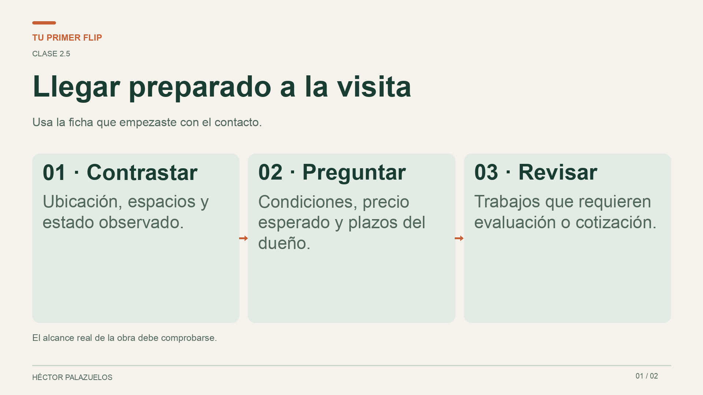
Al explicar qué llevas y qué observas en la casa.
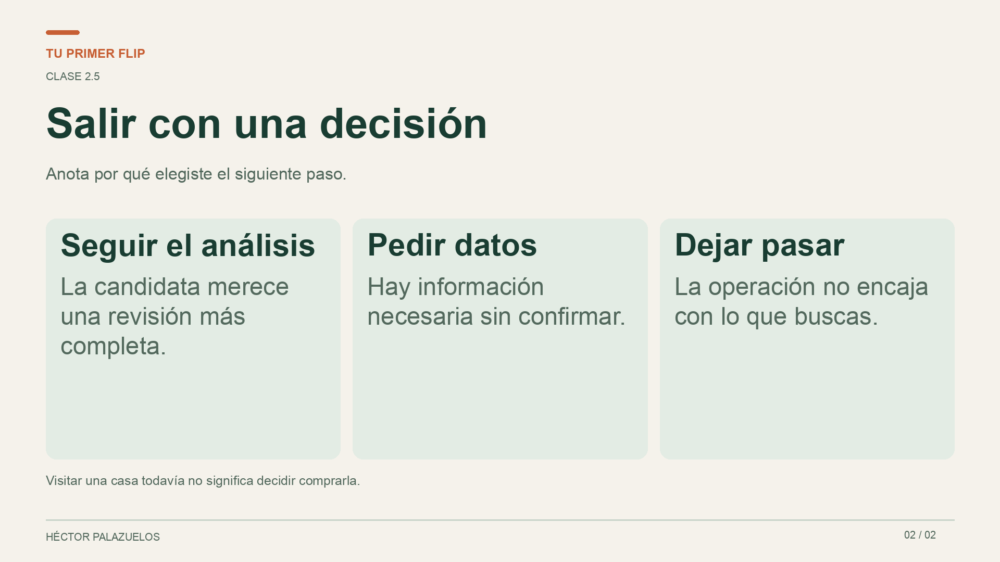
Cuando enumeres las tres acciones al terminar la visita.
Vertical: 1080 × 1920 · Horizontal: 1920 × 1080. El ZIP también incluye SVG editables. Se conserva el estado de revisión del guion.
La visita nos sirve para contrastar lo que entendimos por mensaje con lo que podemos observar y preguntar en la casa.
Lleva la ficha del contacto. Revisa ubicación, espacios y trabajos aparentes. Anota qué observas y qué necesita una evaluación o cotización. Una fotografía puede ayudar a explicar un hallazgo, pero no resuelve por sí sola si el trabajo será leve o costoso.
Para la forma de trabajar que estamos enseñando, nos interesa saber si la intervención encaja con una remodelación leve. Si aparece un trabajo de mayor alcance, necesitamos incorporarlo a la evaluación antes de decidir.
La conversación con el dueño también importa: qué quiere vender, qué espera recibir, en qué plazo y qué información falta. Escucha las condiciones y regístralas. En el módulo del trato vamos a desarrollar cómo se negocian.
Al terminar, elige una de tres acciones: seguir con el análisis, pedir información adicional o dejar pasar la oportunidad. Escribe por qué. Esa explicación es la que después te permite revisar tu criterio y mejorar.
| Lo que observé | Lo que dijo el dueño | Lo que necesita revisión/cotización |
|---|---|---|
Decisión: seguir con el análisis / completar información / dejar pasar.
Motivo: __________ Responsable del siguiente paso: __________ Fecha: __________
G02, sección E: recorrido de práctica, observaciones y siguiente acción.
Para preparar la clase. Estas notas quedan fuera del guion hablado.
Las seis clases tienen guion de trabajo y tarea; estos pendientes identifican lo que todavía no puede presentarse como práctica comprobada de Héctor o configuración verificada de su cuenta.
Capítulo 2 · Cómo capto casas con anuncios y elijo cuáles revisar
Clase 2.6 · Cómo sé si la captación está funcionando
2 láminas. Descarga el paquete completo o elige imágenes sueltas. Agrégalas en tu editor después de grabar.
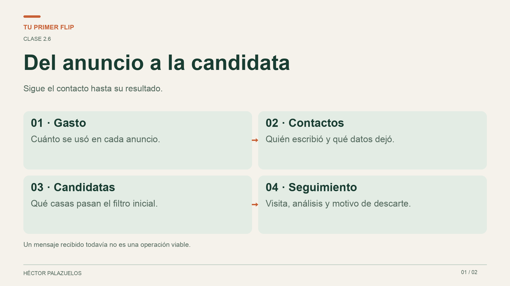
Al unir lo que se gastó con las casas que vale la pena revisar.
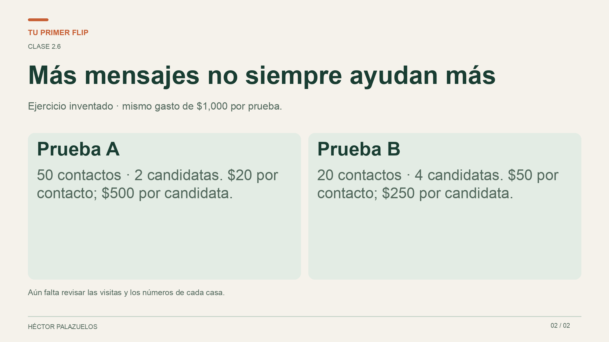
Cuando compares las dos pruebas de mil pesos.
Vertical: 1080 × 1920 · Horizontal: 1920 × 1080. El ZIP también incluye SVG editables. Se conserva el estado de revisión del guion.
Vamos a juntar el anuncio con lo que ocurrió después. Quiero saber cuánto se gastó, cuántos contactos llegaron y cuántas casas merecen una revisión más completa.
Imagina dos pruebas. En cada una gastamos mil pesos. La primera trae cincuenta contactos y dos casas que pasan el filtro inicial. La segunda trae veinte contactos y cuatro casas que pasan ese filtro.
La primera costó veinte pesos por contacto. La segunda, cincuenta pesos por contacto. Si solo miras ese número, parece más conveniente la primera.
Ahora divide el gasto entre las casas que pasan el filtro: quinientos pesos en la primera prueba y doscientos cincuenta en la segunda. Ese dato cambia la lectura. Todavía necesitamos saber qué pasa en las visitas y en los números de cada casa, pero ya tenemos una medida más cercana al trabajo que queremos realizar.
Por eso tu registro debe conectar cada contacto con su anuncio y con el siguiente paso. Si una casa no conviene, anota el motivo. Si falta una respuesta, deja pendiente y fecha de seguimiento. Si todavía no hay una casa viable, lo registramos así.
Con suficiente seguimiento podrás ver qué mensaje trae el tipo de propiedades que buscas, qué información suele faltar y en qué parte del proceso se detienen los contactos. Eso te ayuda a decidir qué ajustar.
Al cerrar este módulo tendrás el perfil que buscas, un video preparado, la ficha de campaña y un registro para atender las respuestas. En el siguiente abrimos los números y los documentos de la casa candidata para decidir si tiene sentido avanzar.
Registrar contactos distintos y el mismo periodo de observación para comparar pruebas.
| Prueba | Periodo | Gasto | Contactos nuevos | Casas que pasan el filtro inicial | Visitas | Casas analizadas | Acuerdos |
|---|---|---|---|---|---|---|---|
| A | |||||||
| B |
Ejercicio: A gasta $1,000, recibe 50 contactos y obtiene 2 casas que pasan el filtro. B gasta $1,000, recibe 20 contactos y obtiene 4. Calcula ambos costos y explica qué información adicional necesitas antes de decidir qué anuncio mantener.
Solución: A: $20 por contacto y $500 por casa inicialmente viable. B: $50 y $250, respectivamente. Falta observar las revisiones posteriores, calidad de los datos, visitas y posibles acuerdos. Son cifras de práctica, no resultados de Héctor.
G02, sección F: completar el ejercicio de las dos pruebas y explicar cuál investigarías más y por qué.
Para preparar la clase. Estas notas quedan fuera del guion hablado.
Las seis clases tienen guion de trabajo y tarea; estos pendientes identifican lo que todavía no puede presentarse como práctica comprobada de Héctor o configuración verificada de su cuenta.
Capítulo 4 · Cómo encuentro inversionistas y armo el trato
Clase 4.1 · Dónde buscar inversionistas y cómo elegir a quién acercarme
2 láminas. Descarga el paquete completo o elige imágenes sueltas. Agrégalas en tu editor después de grabar.
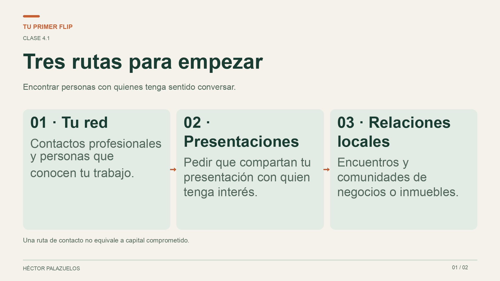
Cuando expliques los tres caminos para buscar inversionistas.
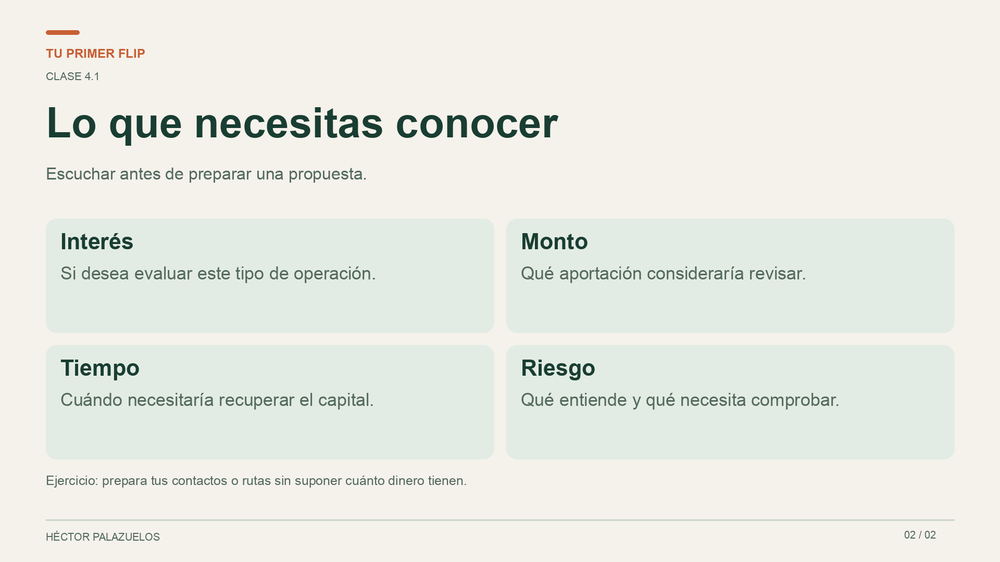
Al explicar monto, tiempo, riesgo y participación.
Vertical: 1080 × 1920 · Horizontal: 1920 × 1080. El ZIP también incluye SVG editables. Se conserva el estado de revisión del guion.
Ya entendiste cómo revisar una casa. Ahora viene una pregunta muy común: «¿Y de dónde saco a alguien que quiera invertir conmigo?».
Vamos a convertir esa pregunta en pasos que sí puedes trabajar. Un inversionista necesita entender quién va a hacer el trabajo, para qué se usaría su dinero y qué puede pasar con la operación. Tu primera tarea es encontrar personas con quienes tenga sentido abrir esa conversación.
Te propongo empezar por tres caminos. El primero es la gente que ya conoce tu trabajo: contactos profesionales, antiguos clientes o conocidos con quienes existe una relación. No necesitas saber cuánto dinero tienen. Necesitas saber si les interesa conocer este tipo de negocio y si quieren conversar contigo.
El segundo camino son las presentaciones. Puede que tú no conozcas a la persona, pero un contacto tuyo sí. Puedes pedirle que le comparta tu presentación y que, si le interesa, los ponga en contacto. Así la otra persona decide si quiere hablar. Un contador, un arquitecto o un asesor inmobiliario pueden formar parte de esa red; eso no significa que deban darte datos de sus clientes.
El tercero es construir relaciones donde ya se habla de negocios o inmuebles: encuentros locales, asociaciones profesionales y comunidades de tu ciudad. Revisa quién organiza, qué tema se tratará y si puedes participar. Un directorio de profesionales sirve para ubicar personas del sector; no es una lista de gente dispuesta a invertir.
Tus redes también pueden ayudar a mostrar lo que sabes hacer: una visita, una revisión de números o un trabajo terminado. Si estás empezando, enseña tu aprendizaje y deja claro cuándo usas un ejercicio. Una casa ajena o un caso de este curso no se convierte en experiencia tuya por publicarlo.
Vamos con un ejemplo ficticio. Ana conoce a una persona que administra propiedades, a un amigo que le pidió información sobre flips y a un conocido que necesita recuperar sus ahorros el próximo mes. Para empezar, Ana puede pedir una presentación a la primera persona y conversar con su amigo. El tercero tiene una necesidad de tiempo que probablemente no coincide con una operación inmobiliaria. Tener dinero disponible no basta para que la operación le convenga.
Después hay que conversar sobre monto, tiempo, riesgo y participación. ¿Le interesa este tipo de operación? ¿Cuánto tiempo podría mantener el capital ocupado? ¿Qué necesitaría revisar? ¿Entiende que la venta puede tardar y que puede haber pérdidas? Esas respuestas se preguntan; no se deducen por su profesión o por cómo vive.
Abre la guía y prepara una lista de diez contactos o rutas de presentación. Si hoy solo tienes tres, escribe tres y trabaja las rutas que faltan. La meta del ejercicio es saber con quién empezar y por qué, sin inventar que ya tienes inversionistas.
Usa iniciales o nombres ficticios en la tarea que compartas. No entregues teléfonos ni datos financieros de otras personas.
| Contacto o ruta | Cómo existe la relación | Motivo para conversar | Dato todavía desconocido | Próximo paso |
|---|---|---|---|---|
| Ejemplo: contacto A | Conocido que preguntó sobre flips | Expresó curiosidad | Plazo e interés real | Pedir permiso para conversar |
| Por completar |
Una respuesta completa distingue contacto, persona interesada y posible inversionista. No clasifica a alguien por riqueza supuesta. En el ejemplo, la necesidad de recuperar ahorros en un mes es motivo para no avanzar con esa persona para una operación de duración incierta.
Para preparar la clase. Estas notas quedan fuera del guion hablado.
Capítulo 4 · Cómo encuentro inversionistas y armo el trato
Clase 4.2 · Cómo hacer el primer contacto y saber si hay interés
2 láminas. Descarga el paquete completo o elige imágenes sueltas. Agrégalas en tu editor después de grabar.
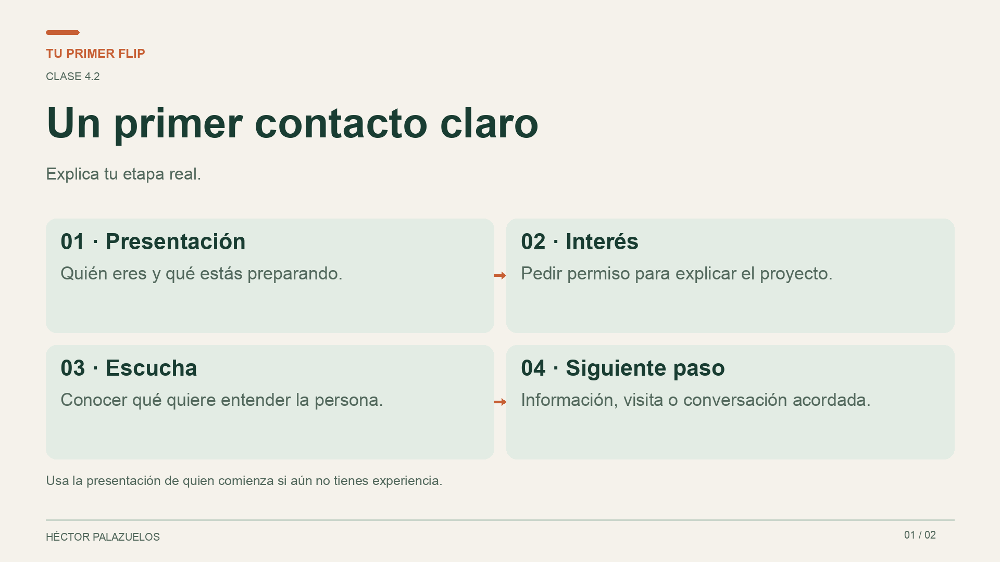
Durante los ejemplos de primer mensaje.
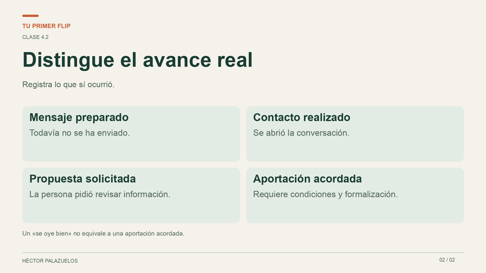
Cuando expliques el registro del seguimiento.
Vertical: 1080 × 1920 · Horizontal: 1920 × 1080. El ZIP también incluye SVG editables. Se conserva el estado de revisión del guion.
Ya tienes una lista. Ahora hay que empezar la conversación. Para esta práctica, el objetivo del primer mensaje es conseguir permiso para explicar lo que haces y escuchar qué busca la otra persona.
Si estás empezando, dilo con claridad. Puedes presentarte así: «Estoy preparándome para trabajar una primera operación de compra, remodelación y venta de una casa. Estoy aprendiendo a revisar los números y a organizar el proyecto. Me gustaría saber si te interesa conocer cómo funciona este tipo de negocio».
Fíjate que estás describiendo tu etapa real. Si todavía no tienes una casa analizada, tampoco tienes una inversión concreta para presentar. Puedes construir la relación y conocer sus criterios. La propuesta de una propiedad viene cuando tengas información que se pueda revisar.
Si ya tienes una candidata analizada, el mensaje puede ser: «Estoy revisando una casa en [zona] y preparé una primera cuenta con compra, remodelación, gastos y posibles precios de venta. ¿Te interesa que te explique el proyecto y sus pendientes en una llamada de quince minutos?».
Ahora vamos con una presentación por medio de alguien. «Estoy preparando un proyecto de remodelación y venta. Si conoces a alguien interesado en revisar este tipo de operaciones, ¿puedes compartirle mi presentación? Si quiere conversar, me puede escribir». Tu contacto decide si hace la presentación y la otra persona decide si responde.
Cuando acepten conversar, escucha antes de soltar toda la propuesta. Pregunta si han participado en algo parecido, qué les gustaría entender y en qué plazo necesitarían disponer otra vez del dinero. Si hay interés, puedes preguntar qué rango de aportación considerarían revisar. No necesitas pedir estados de cuenta en la primera llamada.
Imagina que el proyecto necesita un millón de pesos y la persona te dice que podría considerar doscientos mil. Eso es información para evaluar, no significa que ya resolviste los otros ochocientos mil. Antes de comprometer la operación hay que definir cómo se cubriría el capital completo y los acuerdos que eso implica.
También puede decirte: «Me interesa, pero primero quiero ver la casa». Entonces deja un siguiente paso concreto: qué vas a compartir, cuándo y qué falta confirmar para poder visitarla. Si dice que no le interesa, agradece y cierra la conversación.
En tu registro anota lo que ocurrió: mensaje preparado, contacto realizado, conversación aceptada o propuesta solicitada. Así puedes distinguir el trabajo que llevas de lo que todavía falta. Un «se oye bien» no equivale a una aportación acordada.
Sin casa analizada: «Estoy preparando mi primera operación de compra, remodelación y venta. Me gustaría conocer qué revisarías tú antes de participar en un proyecto así. ¿Te interesa que conversemos? Todavía estoy en la etapa de preparación».
Con análisis preliminar: «Estoy revisando una casa en [zona]. Tengo un presupuesto preliminar y los pendientes identificados. ¿Te interesa revisar conmigo la oportunidad, los costos y los riesgos?».
Por presentación: «Si alguien de tu red quiere conocer proyectos de remodelación y venta, puedes compartirle mi presentación y que me contacte si le interesa».
Escribe un mensaje para tu etapa actual y ensáyalo con otra persona. Después prepara esta ficha:
| Pregunta | Respuesta o pendiente |
|---|---|
| ¿Qué le interesa conocer? | |
| ¿Ha participado antes? | |
| ¿Qué plazo necesita y por qué? | |
| ¿Qué rango consideraría revisar, si desea compartirlo? | |
| ¿Quién participa en su decisión? | |
| ¿Qué pidió ver y cuál es el siguiente paso acordado? |
El mensaje permite rechazar la conversación sin presión, no inventa experiencia y no promete una cifra de ganancia. En el ejemplo de un millón necesario y doscientos mil considerados, la diferencia por resolver es de ochocientos mil; los doscientos mil tampoco se registran como recibidos.
Para preparar la clase. Estas notas quedan fuera del guion hablado.
Capítulo 4 · Cómo encuentro inversionistas y armo el trato
Clase 4.3 · Cómo preparo una propuesta que se pueda revisar
2 láminas. Descarga el paquete completo o elige imágenes sueltas. Agrégalas en tu editor después de grabar.
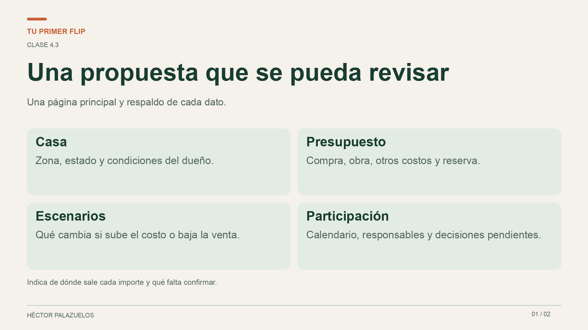
Al presentar la estructura de la propuesta.
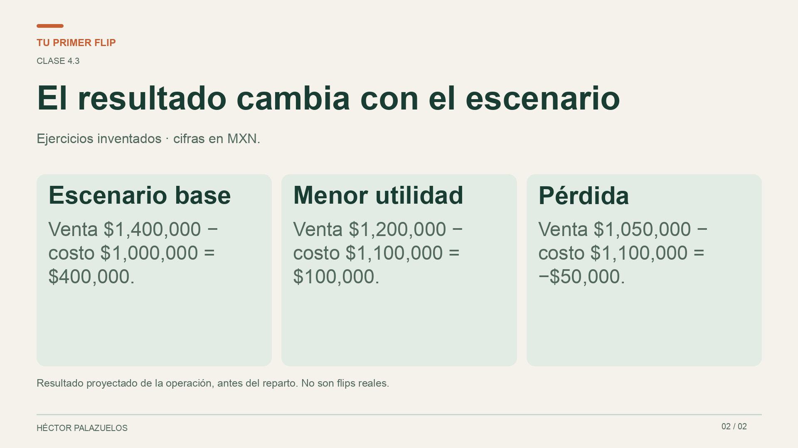
Cuando muestres qué pasa si cambian la venta y los costos.
Vertical: 1080 × 1920 · Horizontal: 1920 × 1080. El ZIP también incluye SVG editables. Se conserva el estado de revisión del guion.
La persona te dice: «Enséñame el proyecto». Aquí necesitas orden. Vamos a preparar una página que permita entender la operación y, detrás, los documentos que respaldan cada dato.
Empieza con la casa: zona, estado, situación conocida y por qué vale la pena seguir revisándola. Después explica las condiciones preliminares del dueño. Si el precio todavía no está aceptado o falta revisar un documento, escríbelo como pendiente.
La siguiente parte es el dinero. Cuánto cuesta adquirir o estructurar la operación, cuánto necesita la remodelación, cuáles son los demás gastos y cuánto se reserva para imprevistos. La forma concreta del trato determina qué conceptos debes incluir; no copies una lista sin revisar tu caso.
Vamos a usar cifras inventadas únicamente para aprender a presentar la cuenta. Compra: setecientos mil pesos. Remodelación: cien mil. Otros costos de la operación: ciento cincuenta mil. Reserva para imprevistos: cincuenta mil. El presupuesto completo suma un millón de pesos.
En una operación real tienes que desglosar esos otros costos: trámites, impuestos que correspondan a la operación, comercialización, mantenimiento y lo que aplique. También debes indicar de dónde salió cada importe y qué falta confirmar. La reserva es presupuesto disponible; al cerrar las cuentas revisas cuánto se gastó realmente.
Supongamos un precio de venta de un millón cuatrocientos mil y que se utiliza todo ese presupuesto. La utilidad proyectada de la operación sería de cuatrocientos mil. Todavía falta acordar cuánto corresponde a cada participante y revisar sus impuestos personales. El precio de venta es una estimación que necesita referencias; aquí no estamos afirmando que esa casa exista o que pueda venderse en ese monto.
También quiero que muestres qué pasa si las cosas cambian. Si el costo total sube a un millón cien mil y vendes en un millón doscientos mil, quedan cien mil. Si vendes en un millón cincuenta mil con ese mismo costo, faltan cincuenta mil para recuperar todo lo invertido. Es una pérdida.
Ahora agrega cuándo se necesitaría cada aportación, el plazo estimado, quién hará cada trabajo y qué decisiones faltan. Que la reserva esté en el presupuesto no significa que puedas cambiar la obra sin acordarlo.
Termina con lo que estás solicitando: revisar el expediente, visitar la casa o comentar una propuesta de participación. El ejercicio se completa con información ordenada y preguntas resueltas; no hace falta recibir dinero.
| Concepto | Importe supuesto |
|---|---|
| Compra | $700,000 |
| Remodelación | $100,000 |
| Otros costos de la operación | $150,000 |
| Reserva incluida en el presupuesto | $50,000 |
| Capital presupuestado total | $1,000,000 |
Para el ejercicio se supone que se utiliza toda la reserva. La fila de otros costos requiere desglose en una propuesta real; no equivale a una cotización ni a una estimación fiscal. Las cifras no son resultados de Héctor.
| Escenario ficticio | Venta | Costo total supuesto | Resultado de la operación |
|---|---|---|---|
| Base | $1,400,000 | $1,000,000 | $400,000 |
| Menor venta y mayor costo | $1,200,000 | $1,100,000 | $100,000 |
| Pérdida | $1,050,000 | $1,100,000 | −$50,000 |
Completa una propuesta con el ejercicio ficticio o con una casa candidata. Etiqueta cada importe como documento, cotización, estimación o pendiente. Añade un calendario de necesidades de dinero; con datos inventados, identifica también ese calendario como práctica.
La suma inicial es $1,000,000. Los resultados son $400,000, $100,000 y −$50,000. Ninguno representa por sí solo lo que recibe el inversionista. La propuesta muestra también el escenario de pérdida y no presenta una fecha de venta como compromiso asegurado.
Para preparar la clase. Estas notas quedan fuera del guion hablado.
Capítulo 4 · Cómo encuentro inversionistas y armo el trato
Clase 4.4 · Cómo presento la oportunidad, respondo dudas y doy seguimiento
2 láminas. Descarga el paquete completo o elige imágenes sueltas. Agrégalas en tu editor después de grabar.
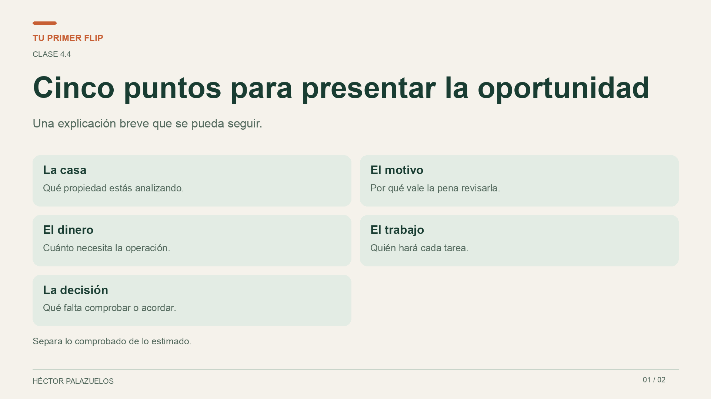
Al ensayar la presentación de cinco puntos.
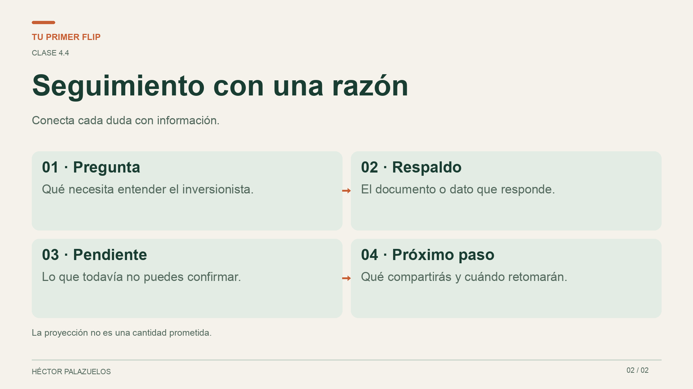
Cuando hables de las dudas y del siguiente contacto.
Vertical: 1080 × 1920 · Horizontal: 1920 × 1080. El ZIP también incluye SVG editables. Se conserva el estado de revisión del guion.
Ya tienes la propuesta. Ahora hay que explicarla sin que la otra persona tenga que adivinar. Te propongo ensayar una presentación breve con cinco puntos: qué casa es, por qué la estás revisando, cuánto dinero necesita, quién hace el trabajo y qué falta decidir.
Puedes abrir así: «Quiero mostrarte una operación que estoy analizando. Primero vemos la casa, luego los costos y los posibles resultados. Al final revisamos qué información te haría falta para decidir si seguimos».
Durante la explicación separa lo comprobado de lo estimado. Si el dueño pide una cantidad, dilo como precio solicitado. Si tienes una cotización, muestra qué trabajos incluye y hasta cuándo es válida. Si estimaste la venta con anuncios de la zona, explica que esos anuncios no son ventas cerradas.
Ahora vienen las preguntas. «¿Cuánto voy a ganar?». Puedes responder: «La cuenta proyecta este resultado para la operación; tu parte dependería del acuerdo. Revisemos también qué ocurre si el costo aumenta o la venta baja». Usa los escenarios de la clase anterior. No conviertas el mejor escenario en una cantidad prometida.
«¿Y si no se vende cuando dices?». Hay que hablar del costo de esperar, de quién podría aportar recursos adicionales y de cómo se decidiría un cambio de precio. Si eso no está resuelto, queda como condición pendiente para avanzar.
«¿Qué experiencia tienes?». Si es tu primer proyecto, puedes decir: «Estoy preparando mi primera operación. Estos son los análisis que hice y estas son las personas con quienes estoy revisando las áreas que no domino». Nombra apoyos reales y tareas reales. La experiencia de tu arquitecto no se vuelve automáticamente experiencia tuya.
«¿Mi dinero está garantizado?». Puedes contestar: «La operación tiene riesgos. Cualquier respaldo que planteemos necesita quedar definido y revisado en el acuerdo; no puedo ofrecerte una protección que todavía no existe». Esa respuesta abre una revisión concreta de cómo quedaría la participación.
Al terminar, pregunta qué necesita revisar. Si solicita una cotización más clara, el siguiente paso es conseguir esa cotización. Si necesita hablar con su asesor, acuerden cuándo tendría sentido retomar. Y si no quiere seguir, cierras la conversación con respeto.
Un seguimiento de práctica sería: «Quedamos en revisar el presupuesto de obra. Ya está actualizado con los conceptos que faltaban. ¿Te parece que retomemos la conversación el día que acordamos?».
Registra la duda, el documento que la atiende y el siguiente paso. Así el seguimiento tiene una razón. Para terminar la clase, ensaya con alguien que te haga preguntas difíciles y anota cuáles todavía no puedes responder.
Prepara cinco tarjetas: casa, motivo, cuenta, equipo y pendientes. Usa la propuesta de 4.3. El ensayo puede durar cinco minutos; es una referencia para practicar, no una promesa comercial.
| Duda | Evidencia o decisión necesaria | Responsable | Fecha acordada |
|---|---|---|---|
| ¿Por qué ese precio de venta? | Referencias comparables y sus límites | ||
| ¿Qué pasa si tarda más? | Gastos de espera y acuerdo de actuación | ||
| ¿Qué experiencia tienes? | Trayectoria propia y apoyos comprobables | ||
| ¿Qué respaldo habría? | Revisión de la estructura y sus límites |
Ensaya cuatro objeciones, prepara un mensaje de seguimiento y clasifica el resultado: falta información, quiere seguir revisando o no desea continuar. Puedes completar todo mediante simulación, sin mandar mensajes reales.
Responder bien puede consistir en decir «ese punto falta por revisar» y asignar un siguiente paso. No uses un plazo falso, una ganancia segura ni la supuesta presencia de otros inversionistas para presionar.
Para preparar la clase. Estas notas quedan fuera del guion hablado.
Capítulo 4 · Cómo encuentro inversionistas y armo el trato
Clase 4.5 · Cómo acordamos aportaciones, responsabilidades y reparto
2 láminas. Descarga el paquete completo o elige imágenes sueltas. Agrégalas en tu editor después de grabar.
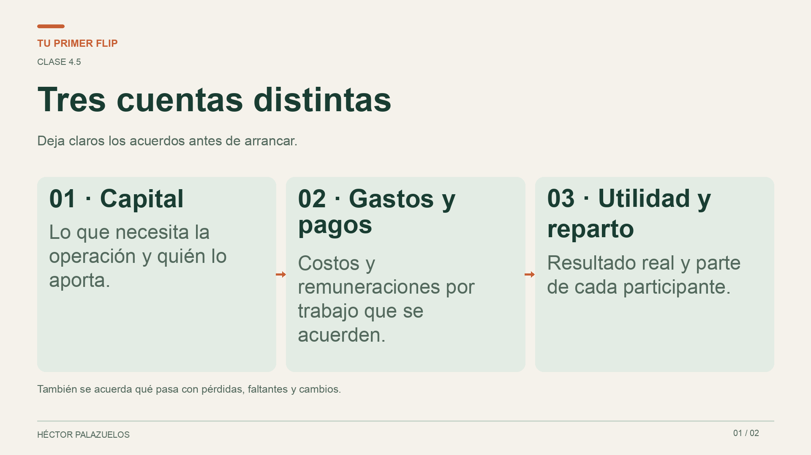
Al separar las tres cuentas de la operación.
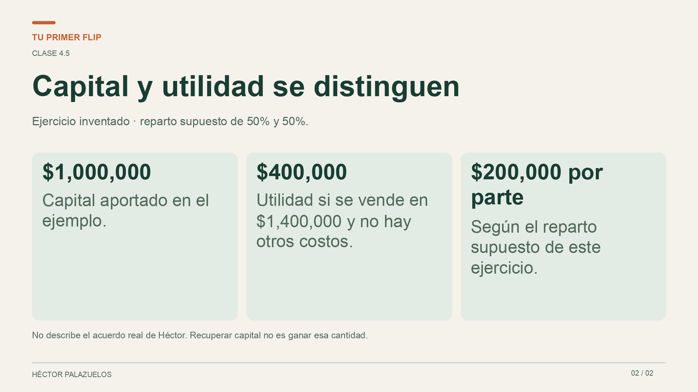
Cuando expliques el ejemplo de reparto por mitades.
Vertical: 1080 × 1920 · Horizontal: 1920 × 1080. El ZIP también incluye SVG editables. Se conserva el estado de revisión del guion.
Que alguien quiera invertir contigo es el inicio de otra conversación: qué va a aportar cada quien, quién hará el trabajo y cómo se calculará el resultado.
Yo llevo prácticamente toda la operación de mi negocio y cuento con un arquitecto que se encarga de las remodelaciones. Esa es mi distribución general de trabajo. Para tu proyecto necesitas escribir quién se ocupará de cada tarea, qué podrá decidir y qué necesitará consultar.
Vamos a separar tres cuentas. Primero, el capital que necesita la operación. Después, los gastos y cualquier pago por trabajo que se acuerde. Por último, la utilidad que podría repartirse cuando se conozca el resultado. Si alguien cobra una cantidad por operar, tienes que decir cuándo se paga y si forma parte del costo. No la puedes ocultar y descontarla al final sin haberla acordado.
Para practicar, usemos el escenario ficticio de un millón de costo total y un millón cuatrocientos mil de venta. Supongamos que una persona aporta todo ese millón y que el operador aporta su trabajo. También supongamos que pactaron repartir la utilidad por mitades y que no hay otra remuneración pendiente. Son condiciones inventadas para este ejercicio, no el acuerdo real de mis operaciones.
Si se cumplen esas cifras y no hay otros gastos, se recupera el millón aportado y quedan cuatrocientos mil de utilidad de la operación. Doscientos mil corresponderían a cada participante según ese acuerdo. El inversionista recibiría su capital más su parte de utilidad; devolver el capital no significa que todo ese dinero sea ganancia.
Ahora supón que el resultado es de cien mil. Bajo el mismo reparto, serían cincuenta mil para cada uno. ¿Y si hay una pérdida de cincuenta mil? Ya no hay utilidad que repartir y no alcanza para recuperar todos los recursos. El tratamiento de esa pérdida debe estar acordado; un reparto de ganancias por mitades no responde automáticamente quién cubre los faltantes.
También hay que definir qué pasa si hace falta más capital, quién puede autorizar cambios y qué información se entregará. Por ejemplo: qué compras necesitan aprobación, qué comprobantes se guardan y con qué frecuencia se revisa el avance.
Antes de formalizar, esas condiciones deben quedar entendibles para todos y revisadas según la operación. En tu ejercicio, escribe qué está acordado y qué sigue abierto. Si faltan aportaciones esenciales, todavía no tienes un proyecto listo para arrancar.
| Tema | Propuesta | Acordado o pendiente |
|---|---|---|
| Capital inicial y calendario | ||
| Trabajo del operador y del equipo | ||
| Gastos previos y quién los cubre | ||
| Honorarios u otros pagos por trabajo | ||
| Definición de utilidad y gastos incluidos | ||
| Reparto propuesto | ||
| Aportaciones adicionales y pérdidas | ||
| Quién autoriza cambios | ||
| Informes, comprobantes y acceso a cuentas del proyecto | ||
| Retraso, salida o desacuerdo |
La hoja organiza una conversación. No sustituye un contrato ni determina qué figura legal corresponde.
Explica el ejemplo base con tus palabras y completa cinco renglones de la hoja. Señala al menos tres decisiones pendientes antes de formalizar. Si usas el escenario de costo total $1,100,000, la aportación adicional de $100,000 también debe explicarse; no desaparece de la cuenta.
En el escenario base ficticio: capital $1,000,000, utilidad de la operación $400,000 y $200,000 de utilidad para cada participante. Los impuestos personales que correspondan a cada uno se revisan por separado; no se presenta esa parte como ingreso neto personal. En el escenario de utilidad $100,000, el reparto hipotético es $50,000 por participante. Si hay pérdida, no se reparten utilidades ni se asegura la recuperación íntegra.
Para preparar la clase. Estas notas quedan fuera del guion hablado.
Capítulo 4 · Cómo encuentro inversionistas y armo el trato
Clase 4.6 · Cómo negocio con el dueño y preparo los acuerdos
2 láminas. Descarga el paquete completo o elige imágenes sueltas. Agrégalas en tu editor después de grabar.
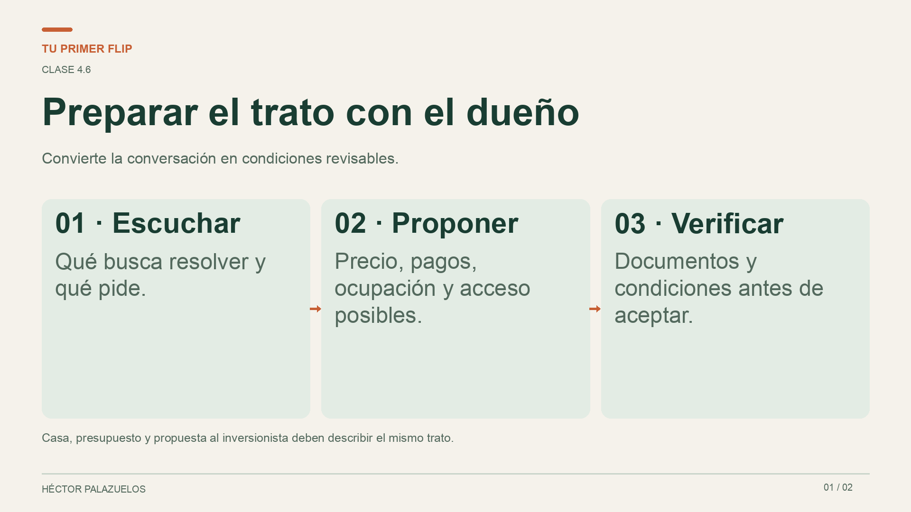
Al explicar los tres pasos para preparar la conversación.
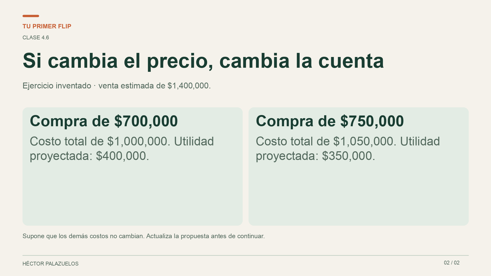
Durante el ejemplo en que el dueño pide cincuenta mil pesos más.
Vertical: 1080 × 1920 · Horizontal: 1920 × 1080. El ZIP también incluye SVG editables. Se conserva el estado de revisión del guion.
Mientras preparas la participación del inversionista, tienes que mantener clara la conversación con el dueño. El proyecto depende de condiciones que ambas partes puedan cumplir.
Desde el análisis inicial necesitas saber qué pide, qué quiere resolver y qué condiciones considera. Ahora vamos a convertir esa información en una propuesta concreta. Revisa precio, forma y momentos de pago, ocupación de la casa, acceso para revisarla y documentos pendientes. Cada respuesta puede cambiar los números.
Te propongo preparar la conversación en tres pasos. Primero, escucha lo que necesita el dueño sin prometer una solución antes de revisar. Después, explica qué condiciones podrías proponer con los datos que tienes. Finalmente, anota qué tendría que verificarse antes de aceptar o firmar.
En el presupuesto ficticio de este capítulo usamos setecientos mil pesos para la compra. Si el dueño pide setecientos cincuenta mil y todo lo demás sigue igual, el costo total sube de un millón a un millón cincuenta mil. Con la misma venta estimada de un millón cuatrocientos mil, la utilidad proyectada baja de cuatrocientos mil a trescientos cincuenta mil. Cambió el trato, así que debe cambiar la propuesta que revisa el inversionista.
También puede cambiar el calendario. Supón que el dueño necesita un pago antes de la fecha en que habría recursos disponibles. No resuelves eso diciendo que el inversionista «casi seguro» entra. Debes revisar si existe una forma de pago que todos puedan cumplir o reconocer que todavía no puedes aceptar esas condiciones.
Si la casa tiene crédito, está ocupada o alguien actuará en representación del propietario, anota esa situación para la revisión correspondiente. La forma de documentar el trato depende del caso. Esta clase te ayuda a ordenar lo que necesitan revisar el abogado, el notario y los participantes, sin suponer que un solo documento sirve para todas las casas.
Antes de presentar una versión final, compara tres cosas: las condiciones del dueño, el presupuesto actualizado y la participación propuesta al inversionista. Deben contar la misma operación. Si en una conversación prometiste algo distinto, hay que corregirlo antes de seguir.
Tu tarea es escribir una propuesta con pendientes claros. Puedes practicar con un caso ficticio y mostrar cómo cambia la cuenta cuando el dueño pide más dinero o necesita otro calendario.
| Tema | Lo que pide el dueño | Lo que podemos proponer | Qué falta revisar |
|---|---|---|---|
| Precio | |||
| Momentos y forma de pago | |||
| Ocupación y entrega | |||
| Adeudos y documentos | |||
| Acceso para revisión y trabajos | |||
| Condiciones para avanzar |
Actualiza el ejemplo con compra de $750,000, conservando obra $100,000, otros costos $150,000, reserva $50,000 y venta estimada $1,400,000. Después explica qué harías si el pago exigido fuera anterior a la disponibilidad del capital.
El costo presupuestado pasa a $1,050,000 y la utilidad proyectada a $350,000. El cambio se comunica en una propuesta actualizada. Si falta capital en una fecha esencial, se renegocian condiciones o se detiene el avance; no se registra dinero esperado como disponible.
Para preparar la clase. Estas notas quedan fuera del guion hablado.
Capítulo 4 · Cómo encuentro inversionistas y armo el trato
Clase 4.7 · Qué revisamos antes de firmar, aportar y empezar
2 láminas. Descarga el paquete completo o elige imágenes sueltas. Agrégalas en tu editor después de grabar.
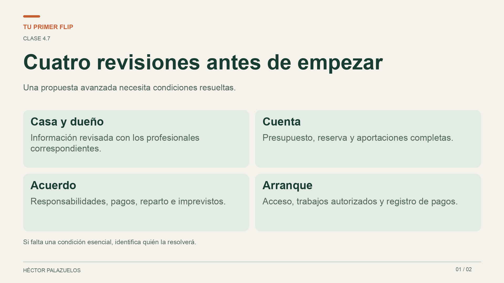
Al presentar las cuatro revisiones del cierre del capítulo.
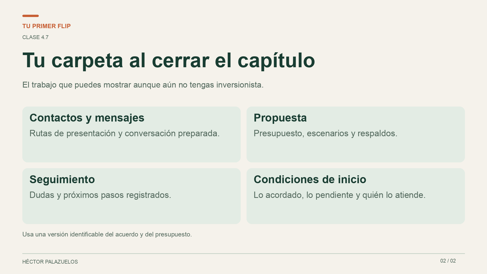
Cuando resumas los entregables antes de pasar a remodelación.
Vertical: 1080 × 1920 · Horizontal: 1920 × 1080. El ZIP también incluye SVG editables. Se conserva el estado de revisión del guion.
Ya hay interés y una propuesta. Ahora toca comprobar si de verdad están listas las condiciones para empezar. Quiero que distingas una conversación avanzada de una operación formalizada.
Te propongo cerrar este capítulo con cuatro revisiones. La primera es la casa y el dueño: que la información pendiente haya sido atendida y que quienes intervienen puedan hacerlo en los términos que se van a documentar. Esa revisión se prepara con los profesionales que correspondan.
La segunda es la cuenta: presupuesto actualizado, calendario de recursos, reserva y gastos de espera. Cada aportación debe tener una persona responsable y una condición de entrega. Si alguien todavía está considerando entrar, esa aportación sigue pendiente.
La tercera es el acuerdo: responsabilidades, pagos, resultado, reparto, imprevistos y cómo se resolverán los cambios. Lo que se explicó verbalmente debe coincidir con los documentos que las partes revisan antes de firmar. Si alguien no entiende una cláusula, hay que resolver esa duda antes de avanzar.
La cuarta es el arranque: cuándo puede acceder el equipo, qué trabajos se autorizaron, quién recibe y registra los pagos y qué comprobantes se conservarán. Tener el dinero no sustituye que estas condiciones estén claras.
Vamos con un ejercicio. Tienes una propuesta revisada, el presupuesto de obra completo y un inversionista que dice estar interesado. Pero no está confirmada la entrega de la casa y el calendario de aportaciones todavía tiene un espacio sin cubrir. ¿Arrancas la remodelación? Todavía hay dos condiciones esenciales por resolver. Anota quién debe atenderlas y qué evidencia necesitas para considerarlas resueltas.
Cuando sí se cumplan las condiciones, conserva una versión identificable de los acuerdos y del presupuesto. Registra las aportaciones y pagos de forma que puedas relacionar cada movimiento con el proyecto y su comprobante. Los datos y cuentas de los participantes se comparten solo con quienes intervienen y necesitan revisarlos.
Al terminar este capítulo, deberías poder mostrar tu mapa de contactos, el mensaje que preparaste, una propuesta con escenarios, el registro de dudas y una lista de condiciones para arrancar. Eso demuestra que sabes trabajar el proceso aunque todavía no hayas conseguido un inversionista.
En el siguiente capítulo vamos a la remodelación: cómo definir el trabajo, comparar presupuestos, revisar avances y controlar los gastos. La operación empieza a ejecutarse y cada decisión tiene que quedar conectada con lo que se acordó.
Reúne tus ejercicios de las siete clases en la guía del capítulo. Marca cada condición como resuelta, pendiente o no aplicable con explicación. Para los pendientes, escribe responsable, siguiente paso y evidencia que necesitas. El ejercicio no exige firmar, aportar, solicitar depósitos ni iniciar una obra.
En el ejemplo faltan la entrega de la casa y una parte del calendario de capital. El siguiente paso es resolver ambas condiciones, no empezar a gastar. La entrega completa del alumno muestra búsqueda, conversación, análisis y condiciones; no se evalúa por cuánto dinero consiguió.
Para preparar la clase. Estas notas quedan fuera del guion hablado.
El método de Héctor, con la forma de explicar del capítulo 1. 8 capítulos · 40 clases · $4,999 MXN.
Tu Primer Flip · Héctor Palazuelos · $4,999 MXN · 8 capítulos y 40 clases.
Héctor pidió empezar a vender la semana del 21 al 27 de septiembre de 2026. Modalidad confirmada: cargar el capítulo 1, disponible al comprar, y liberar un capítulo adicional por semana con sus clases y guías. Los días exactos siguen como propuesta hasta comprobar la preparación.
Hay 17 guiones: cuatro del capítulo 1, seis del capítulo 2 y siete del capítulo 4, con distintos niveles de revisión. Faltan 23 clases por desarrollar. No hay grabaciones verificadas. Para cobrar con acceso al capítulo 1, primero debemos grabar, cargar y revisar sus cuatro clases y guías.
La propuesta de calendario y los textos de oferta se consultan en Venta → Página y oferta. Apertura sugerida: lunes 21 de septiembre; fin del precio de lanzamiento: domingo 27, 23:59, hora de Culiacán. El curso continúa a la venta después. Capítulos 2–8: cada lunes del 28 de septiembre al 9 de noviembre. El comprador debe ver todo el calendario antes de pagar.
Precio vigente: $4,999 MXN por el curso completo. Se propone $6,999 como precio regular desde el 28 de septiembre, pendiente de confirmación: no anunciarlo como precio anterior ni como descuento ya aprobado.
1. Cerrar datos personales pendientes y grabar las cuatro clases del capítulo 1, con su ejemplo, tarea y guía.
2. Grabar a Héctor a cámara para el video comercial y seleccionar tomas de sus casas. El plan está en Venta → Video de venta.
3. Cargar el capítulo 1, informar el calendario completo y reservar bloques de trabajo para cada entrega semanal.
4. Definir plazo de acceso, soporte y garantía. Configurar y comprobar en Hotmart el total al contado de $4,999, el pago, el correo y el acceso a las clases.
5. Revisar el domingo 20. Abrir el lunes 21 únicamente con el capítulo inicial y el recorrido de compra funcionando. Si falta, reprogramar la apertura dentro de la semana sin prometer acceso inmediato a contenido sin grabar.
6. Comunicar la apertura en las redes de Héctor. Meta Ads requiere presupuesto elegido, configuración y medición comprobadas; no hay gasto autorizado ni campañas activadas.
Mensaje: el alumno aprende a captar casas, evaluar números, buscar inversionistas, preparar acuerdos, organizar la obra, vender y cerrar las cuentas. La experiencia confirmada es de más de 100 remodelaciones. No prometer ganancias.
La página comercial se abre desde Venta → Página y oferta. Hay una muestra escrita real de la clase 1.1 y las cuarenta clases del programa. Esta vista local todavía no está publicada ni conectada a un pago.
El curso enseña el método de Héctor: conseguir oportunidades, revisar una casa, hacer números, preparar el trato, organizar la remodelación, vender y cerrar las cuentas. Cada clase sigue la explicación, el ejemplo y la práctica del capítulo 1 aprobado.
El temario único está en materiales/curso/TEMARIO.txt y se muestra en la pestaña Temario del curso. Distribución: capítulo 1, cuatro clases; capítulo 2, seis; capítulo 3, seis; capítulo 4, siete; capítulo 5, cinco; capítulo 6, cinco; capítulo 7, cuatro; capítulo 8, tres. Total: cuarenta.
El capítulo 8 aplica lo aprendido al flip que Héctor elija. El resto enseña cómo trabajar cada parte del método.
Capítulo 1: cuatro guiones desarrollados, guías, tareas y trece láminas; formato aprobado. Ya se incorporó la distribución entre Héctor y su arquitecto. Quedan los acuerdos de aportaciones y reparto para cerrar esas partes de la grabación.
Capítulo 2: seis guiones en borrador y guía. Capítulo 4: siete guiones en borrador sobre cómo encontrar inversionistas y armar el trato; incluye mensajes, propuesta y seguimiento para practicar, pendientes de personalizar con Héctor. Capítulos 3 y 5–8: veintitrés clases por desarrollar. Las grabaciones siguen pendientes.
La oferta comprende el programa y las guías de trabajo que se desarrollan con cada capítulo. Fecha de acceso, entregas, plazo de acceso, garantía y soporte se completan antes de abrir la venta. Cualquier sesión, grupo o acompañamiento adicional se incorpora cuando Héctor lo defina para este curso.
Nombre: Tu Primer Flip.
Formato: curso en línea.
Idioma: español.
Moneda: MXN.
Precio anunciado: $4,999 MXN.
Descripción: copiar 01-DESCRIPCION-HOTMART.txt.
Contenido: ocho capítulos con los cuarenta títulos del temario vigente.
Definir el calendario conforme a la producción real. Si se vende mientras faltan entregas, comunicar que es preventa y cuándo recibe cada parte el alumno. La modalidad confirmada es acceso inicial al capítulo 1 y entregas semanales; especificar claramente qué está disponible y qué falta por entregarse.
Hotmart permite registrar contenido pendiente con su cronograma. Si se declara contenido disponible, pide cargar al menos un módulo no gratuito. Seleccionar la opción que corresponda y comprobar el estado en la cuenta.
Fuente: https://help.hotmart.com/es/article/215828518/-como-registrar-mi-producto-en-hotmart-
Comprobar que el total al contado para el comprador en México coincida con los $4,999 anunciados. Hotmart puede sumar impuestos al precio configurado; revisar base, impuestos y redondeos en el checkout antes de publicar el precio.
Fuentes: https://help.hotmart.com/es/article/4423635238413/-que-es-vat-
https://help.hotmart.com/es/article/360051146712/-que-impuestos-pueden-aplicarse-a-una-compra-
Recorrido propuesto: ANUNCIO EN META → PÁGINA DEL CURSO CON VIDEO → COMPRA EN HOTMART → ACCESO SEGÚN EL CALENDARIO.
La vista local conserva el estilo del panel y sirve para revisar la página comercial. Para cobrar la próxima semana se puede usar la Página de Producto de Hotmart, evitando depender de un despliegue externo pendiente. Permite presentar el curso, integrar un video de YouTube o Vimeo, responder preguntas y mostrar el pago.
Fuente: https://help.hotmart.com/es/article/360031150472/como-configurar-tu-nueva-pagina-de-producto
En Productos → Mis productos → elegir el curso → Página de producto, preparar descripción, video, temario, guías, precio y condiciones. Revisar el borrador y los nombres que aparezcan en la cuenta.
El video se graba con 02-VIDEO-DE-VENTA.txt. En la misma vista Video de venta están el orden de tomas, la apertura alternativa y las indicaciones de montaje. Una sola pieza principal puede presentar el curso en redes y en la página. Los beneficios, anuncios y preguntas están en 03-ANUNCIOS-Y-PUBLICACIONES.txt. Completar las respuestas pendientes de fecha, acceso y garantía antes de publicar.
Esta campaña vende el curso. La campaña que se enseña dentro del capítulo 2 sirve para captar casas de propietarios; tiene otro mensaje y otro objetivo.
Propuesta para la etapa de inscripciones abiertas: una campaña orientada a ventas en web, un conjunto y los anuncios A y B, que comparten cuerpo y cambian únicamente la apertura. Usar el evento de compra cuando el seguimiento esté comprobado. Verificar categoría y opciones de la cuenta para este anuncio.
Público inicial propuesto: adultos en México dentro de la cobertura que se decida atender. Evaluar audiencia amplia; si se prueban intereses, registrar únicamente los que permita seleccionar el panel. «Bienes raíces» y «emprendimiento» son términos para buscar, no opciones verificadas en la cuenta.
Alinear objetivo de campaña, ubicación de conversión y meta de rendimiento. Elegir presupuesto total y fechas antes de activar; todavía no hay gasto autorizado.
Fuente: https://www.facebookblueprint.com/student/path/219699-selecting-objectives-course
Los dos anuncios llevan a la página del curso. Revisar precio, texto, subtítulos y botón de Más información en las vistas previas de Facebook e Instagram.
Obtener el enlace real del producto y el del pago. Revisar en teléfono el programa de 40 clases, los $4,999, las entregas y las condiciones. Comprobar el acceso del alumno conforme a lo configurado.
Conectar la medición de Meta desde Hotmart. Verificar visitas, inicios de pago y compras; distinguir órdenes pendientes de pagos aprobados. Revisar qué importe envía el evento y que una compra no se duplique al usar navegador y API.
Fuente: https://help.hotmart.com/es/article/6565866201741/-como-configuro-las-opciones-avanzadas-del-pixel-de-seguimiento-en-mi-producto-
Identificar cada anuncio con UTM o SCK cuando corresponda, conservando los identificadores originales del enlace. Comprobar el origen en los reportes.
Fuente: https://help.hotmart.com/es/article/216441797/-como-identificar-el-origen-de-mis-ventas-en-hotmart-
Revisar gasto, visitas, compras aprobadas, reembolsos y dudas. El costo de conseguir un alumno debe evaluarse junto con el ingreso neto de cada compra. No se presupone una cantidad de ventas.
Esta carpeta contiene la versión vigente del paso 2. La publicación y la campaña todavía requieren configuración y comprobación en las cuentas reales.
Registrar cada apertura por separado: gasto, reproducciones, tiempo visto si está disponible, clics, visitas reales a la página, inicios de pago, compras aprobadas y reembolsos. Las métricas de reproducción ayudan a revisar la atención; las compras y el ingreso neto permiten evaluar la venta.
Si la gente abandona al principio, revisar la apertura y el primer plano. Si ve el video pero no visita la página, revisar que entienda el curso y la acción siguiente. Si visita y no empieza el pago, revisar las preguntas sobre contenido, entregas y oferta. Si inicia el pago pero no compra, comprobar el proceso de compra y los pagos pendientes. Son hipótesis para investigar, no conclusiones automáticas.
Cambiar una parte identificable por revisión y registrar qué se cambió. No aumentar el gasto solo por vistas o comentarios. Si no hay compras aprobadas, anotarlo así y no dividir entre cero ni presentar el resultado como rentabilidad.
Presupuesto, duración de prueba y límite de gasto quedan pendientes de decisión. No se han activado anuncios ni cobros.
Héctor confirmó que quiere continuar vendiendo semanas después del lanzamiento. Termina el precio promocional, no las inscripciones del curso. Si se aprueba $6,999 como precio regular, el 28 de septiembre cambia la oferta y continúa la misma venta. No anunciar un vencimiento hasta aceptar y configurar ese cambio real.
Mientras se produce: quien compre recibe los capítulos publicados y el calendario común de las entregas pendientes. Al completar los ocho capítulos, vender el curso completo pregrabado. Revisar el video y la página para que no sigan anunciando entregas futuras que ya ocurrieron.
Al terminar la oferta, retirar los enlaces y anuncios con $4,999 y activar el precio regular confirmado; no reiniciar contadores ni repetir la misma fecha cada semana. Campañas posteriores pueden usar promociones nuevas con condiciones reales y un periodo definido.
La estimación y comparación de valor están en Venta → Página y oferta. El diplomado de CENTRO anuncia $48,000 con 80 horas en vivo: es otro formato. La estimación comercial de Tu Primer Flip terminado es $7,000–$10,000 y el precio regular recomendado para probar es $6,999. No equivale a una tasación, un precio histórico ni la garantía de que el mercado pagará esa cantidad.
FUENTES DEL PASO 2 VIGENTE
Actualización: 2026-09-17.
BASE DEL CURSO
Instrucción de Héctor: alinear el paso 2 con su método y el capítulo 1 desarrollado con Codex. Precio: $4,999 MXN. CURSO-VIGENTE.json contiene los ocho capítulos y las cuarenta clases. METODO-HECTOR-CONFIRMADO.md distingue la práctica confirmada de los ejercicios didácticos.
FUENTES OFICIALES
Registro del producto; permite indicar contenido pendiente y cronograma:
https://help.hotmart.com/es/article/215828518/-como-registrar-mi-producto-en-hotmart-
Página de Producto con video, presentación, preguntas y checkout:
https://help.hotmart.com/es/article/360031150472/como-configurar-tu-nueva-pagina-de-producto
Tratamiento de impuestos en el campo de precio:
https://help.hotmart.com/es/article/4423635238413/-que-es-vat-
Impuestos aplicados al comprador por país:
https://help.hotmart.com/es/article/360051146712/-que-impuestos-pueden-aplicarse-a-una-compra-
Opciones de garantía:
https://help.hotmart.com/es/article/360034552751/-como-ajustar-el-plazo-de-garantia-del-producto-que-he-creado-
Información del plazo para el comprador:
https://help.hotmart.com/es/article/360038569752/-como-puedo-cancelar-mi-compra-
Eventos, formas de pago y valor transmitido en el píxel:
https://help.hotmart.com/es/article/6565866201741/-como-configuro-las-opciones-avanzadas-del-pixel-de-seguimiento-en-mi-producto-
Identificación del origen de ventas con UTM/SCK:
https://help.hotmart.com/es/article/216441797/-como-identificar-el-origen-de-mis-ventas-en-hotmart-
Meta Blueprint: alinear objetivo, ubicación de conversión y meta de rendimiento:
https://www.facebookblueprint.com/student/path/219699-selecting-objectives-course
ALCANCE
Documentación consultada el 16-sep-2026. No se accedió a las cuentas de Hotmart ni Meta Ads: configuración y total final se comprueban allí. Algunas páginas oficiales se recuperaron mediante el buscador al no entregar texto en apertura directa.
La campaña y el recorrido son recomendaciones. Presupuesto, calendario y condiciones de acceso están por definir. El programa de cuarenta clases no significa que estén todas grabadas ni publicadas.
VIDEO DE LANZAMIENTO
Héctor confirmó en esta sesión que aparecerá hablando a cámara, con tomas de sus casas y remodelaciones. El guion de 192 palabras, la estructura de ocho escenas y las dos aperturas son propuestas creativas para probar; no resultados medidos.
Meta, Reels: video 9:16, audio y mensajes dentro de la zona visible:
https://www.facebook.com/business/ads/facebook-instagram-reels-ads
Consulta actual: el buscador recuperó la documentación de Reels; la apertura directa redirigió a login. Meta Blueprint sí se pudo leer. No se verificaron botones ni opciones dentro de una cuenta publicitaria. La resolución de exportación y la duración sugerida son decisiones de producción para este video, no límites universales de Meta.
No se generaron ni publicaron videos nuevos en esta sesión: se prepararon el guion, el plan de grabación y el recorrido comercial. La grabación y el montaje quedan pendientes.
REVISIÓN DE LA PÁGINA Y ENTREGA SEMANAL — 17 DE SEPTIEMBRE DE 2026
Referencias y límites de la comparación en REVISION-LANDING.json, visibles en Venta → Página y oferta. Se comparó la estructura; no se conocen las tasas de conversión.
Hotmart: ofertas con precio y enlace de pago propios.
https://help.hotmart.com/es/article/215827788/-como-crear-una-oferta-para-mi-producto-
Hotmart: entrega por fecha programada o días desde la compra. Para esta generación se propone una fecha común por capítulo. Confirmar zona horaria en la cuenta.
https://suportehotmart.zendesk.com/hc/es-es/articles/213467588--C%C3%B3mo-configurar-el-plazo-de-entrega-y-vencimiento-del-acceso-al-contenido-en-Hotmart-Club
COMPARACIÓN DE VALOR Y PRECIOS — 17 DE SEPTIEMBRE DE 2026
DOMUS: $3,499 MXN anunciado y referencia mostrada de $9,833; no se comprobó su historial de precios.
https://domusbienesraices.mx/curso/domuscursoflipping
ADVision: diplomado de 63 horas, anuncia $6,900 en línea y $9,900 presencial. Sus valoraciones propias no se usan para tasar Tu Primer Flip.
https://advision.com.mx/cdv-diplomado-gni/
CENTRO: diplomado inmobiliario de $48,000 publicado, 80 horas, 32 sesiones en vivo; formato y alcance distintos. No es valor equivalente ni precio anterior de Tu Primer Flip.
https://educacioncontinua.centro.edu.mx/cursos-online/negocios-inmobiliarios-estrategia-e-innovacion.html
La página recupera la tipografía Georgia, el fondo crema, el azul oscuro y los botones frambuesa de la landing anterior que Héctor eligió. Aquí puedes revisar la vista comercial, las mejoras y lo que falta para abrir la venta.
Propuesta · Falta confirmar con Héctor
Capítulo 1 al comprar y un capítulo adicional por semana, hasta completar el programa. Precio de lanzamiento: $4,999 MXN. Precio regular propuesto desde el 28 de septiembre: $6,999 MXN.
La vista comercial conserva el precio vigente y el estado de preparación. Las fechas y el precio futuro todavía no se anuncian al público.
Cinco referencias reconocidas, seleccionadas por su forma de presentar formación. Comparamos claridad, credibilidad, programa, valor y urgencia. La identidad visual se toma de la landing anterior elegida por Héctor.
Qué presenta: Presenta al instructor, la habilidad que enseña, el número de lecciones y un tráiler; después permite consultar el programa.
Cómo lo aplicamos: Mostrar pronto quién enseña y qué aprenderás. Más de 100 remodelaciones, casas propias y muestra escrita de clase. El video se añadirá cuando esté grabado.
Qué presenta: La oferta enlazada a su Crash Course combina historia del creador, testimonios identificados, programa y preguntas sobre experiencia y alcance.
Cómo lo aplicamos: Explicar para quién es Tu Primer Flip y responder dudas de capital, experiencia y remodelación. La experiencia de Héctor se acredita con sus casas; testimonios de alumnos solo cuando existan.
Qué presenta: Desglosa los componentes incluidos, les asigna valores anunciados y los agrupa en una membresía con una ruta de aprendizaje.
Cómo lo aplicamos: Siete componentes del método junto al precio total. Se muestra qué aporta cada uno. No se suman precios individuales ficticios; la estimación interna no se presenta como un precio anterior.
Qué presenta: Su catálogo ofrece formación gratuita de ofertas y captación, con videos, guías, plantillas y descargas; distingue esa formación de sus talleres presenciales.
Cómo lo aplicamos: Conectar cada tema con una herramienta o decisión concreta. Una muestra escrita permite conocer la enseñanza. El curso no incorpora asesoría individual ni servicios sin confirmar.
Qué presenta: Expone resultado, entregables, calendario y cierre de una generación en vivo. La página actual integra el curso en una membresía mensual.
Cómo lo aplicamos: Mostrar el ritmo semanal. Para Tu Primer Flip la venta continúa: la urgencia propuesta será el fin del precio de lanzamiento cuando se confirmen fecha y cambio real de precio.
Fuentes oficiales consultadas el 2026-09-17. Las aplicaciones son recomendaciones para este curso; no tenemos datos de conversión de esas páginas.
Revisión el 20 de septiembre: Capítulo 1 completo (cuatro clases y guías), grabado, cargado y revisado como alumno; pago y acceso comprobados; fechas, acceso, soporte y garantía informados antes de comprar. Agenda de trabajo reservada para producir y revisar cada entrega restante. Hoy hay 17 guiones con distintos niveles de revisión, 23 clases por desarrollar y ninguna grabación verificada.
Si el capítulo 1 no está listo el lunes 21, anunciar apertura durante esa misma semana solo cuando esté cargado y comprobado. Si no alcanza, recoger consultas sin cobro y ajustar fechas antes de prometer acceso. No indicar acceso inmediato a clases todavía sin grabar.
| Entrega de 2026 | Capítulo |
|---|---|
| 21/09/2026 | 1. Cómo funciona mi negocio y cómo empezar |
| 28/09/2026 | 2. Cómo capto casas con anuncios y elijo cuáles revisar |
| 05/10/2026 | 3. Cómo decido si una casa conviene |
| 12/10/2026 | 4. Cómo encuentro inversionistas y armo el trato |
| 19/10/2026 | 5. Cómo organizo la remodelación y controlo los gastos |
| 26/10/2026 | 6. Cómo consigo comprador y preparo la venta |
| 02/11/2026 | 7. Cómo cierro las cuentas y reparto la utilidad |
| 09/11/2026 | 8. Un flip real explicado de principio a fin |
Durante la producción: capítulo 1 al comprar y un capítulo nuevo cada semana en fechas comunes. Quien entre después recibe lo ya publicado y las entregas pendientes. Al completar el curso, propuesta de acceso a todos los pregrabados desde la compra. Plazo de acceso y soporte por definir.
Mi estimación comercial orientativa para el programa terminado es $7,000–$10,000 MXN; no es una tasación ni un valor de mercado demostrado. Recomiendo probar $6,999 como precio regular y $4,999 de lanzamiento: diferencia de $2,000 (28.6%). El precio regular necesita aceptación y aplicación real desde el 28 de septiembre. No afirmar que antes costaba $6,999 ni que el curso equivale a un diplomado de $48,000.
Tu Primer Flip. Aprende el método de Héctor Palazuelos para captar casas, hacer los números, buscar inversionistas, organizar la remodelación y preparar la venta. 8 capítulos, 40 clases y guías de trabajo por $4,999 MXN durante el lanzamiento. Empieza con el capítulo 1 y recibe un capítulo nuevo cada semana. Precio de lanzamiento hasta el 27 de septiembre de 2026, a las 23:59, hora de Culiacán. La venta del curso continúa después.
Si se confirma el precio regular: Precio de lanzamiento: $4,999 MXN hasta el 27 de septiembre. Precio regular desde el 28 de septiembre: $6,999 MXN. Entras con $2,000 menos durante el lanzamiento. Publicar solo al confirmar y configurar el cambio real de precio.
Ship 30 for 30 · Revisión del 2026-09-17.
Comparación de la oferta pública consultada; no conocemos sus tasas de conversión. Sus condiciones pertenecen a una membresía con actividad en vivo; Tu Primer Flip se plantea como curso grabado con entregas semanales.
| Táctica | Referencia | Tu Primer Flip |
|---|---|---|
| Fecha de cierre | Cierre: 4 de octubre, 23:59 ET; generación desde el 5 de octubre. | Propuesta: precio de lanzamiento del 21 al 27 de septiembre, hasta las 23:59 de Culiacán. El 28 cambia al precio regular confirmado y el curso sigue a la venta. |
| Referencia de precio | Declara un antiguo precio independiente de $800; ahora lo incluye en una membresía de $99 al mes. | Propuesta: $4,999 durante el lanzamiento y $6,999 desde el 28 de septiembre. Diferencia de $2,000; solo anunciarla si se acepta y aplica el precio regular. |
| Valor de lo incluido | Desglosa sesiones, programa, ejercicios y recursos. | Mostrar las 40 clases, las guías y los ejercicios de captación, números e inversionistas. No asignar precios inventados a materiales ni añadir sesiones que no hemos acordado. |
| Confianza para decidir | Presenta instructores y testimonios. | Destacar las más de 100 remodelaciones confirmadas de Héctor, sus redes y una muestra real de la clase. Testimonios de alumnos solo cuando existan y se autoricen. |
Mi recomendación: Tomar la claridad del plazo y adaptarla a venta continua: termina la oferta de lanzamiento, mientras el curso sigue disponible. El contador debe apuntar al cambio real de precio y desaparecer al vencer.
$6,999 es una recomendación de precio regular, pendiente de confirmación. No anunciarlo como precio anterior ni cerrar inscripciones si se seguirá vendiendo.
Tu Primer Flip. Aprende el método de Héctor Palazuelos para captar casas, hacer los números, buscar inversionistas, organizar la remodelación y preparar la venta. 8 capítulos, 40 clases y guías de trabajo por $4,999 MXN durante el lanzamiento. Empieza con el capítulo 1 y recibe un capítulo nuevo cada semana. Precio de lanzamiento hasta el 27 de septiembre de 2026, a las 23:59, hora de Culiacán. La venta del curso continúa después.
Estimación comercial del programa completo terminado: $7,000–$10,000 MXN. Precio regular recomendado para probar: $6,999. Precio vigente de lanzamiento: $4,999.
Estimación comercial del programa terminado, basada en su alcance previsto y las referencias consultadas. Hipótesis a validar con ventas, calidad final y satisfacción; no valor certificado ni precio anterior.
Las 40 clases cubren la operación completa, hay guías y ejercicios, y Héctor aporta experiencia confirmada de más de 100 remodelaciones. Faltan 23 guiones y las grabaciones; la estimación no afirma que todo esté producido. No hay mentoría individual ni constancia universitaria acordadas.
Tu mapa para empezar: Capítulo 1: recorrido del negocio, participantes y plan de arranque.
Captación con Facebook y Meta Ads: Capítulo 2: video, anuncio, segmentación, ficha del dueño y seguimiento.
Números para decidir: Capítulo 3: documentos, estado de la casa, costos, escenarios y oferta.
Búsqueda y propuesta a inversionistas: Capítulo 4: contactos, mensajes, presentación, objeciones y acuerdos.
Control de una remodelación leve: Capítulo 5: alcance, presupuestos, pagos, avances e imprevistos.
Venta y cierre de cuentas: Capítulos 6 y 7: compradores, negociación, preparación del cierre y reparto.
Un caso para unir todo el método: Capítulo 8: decisiones, ajustes y aprendizajes de un flip elegido por Héctor.
DOMUS · Curso Flipping
$3,499 MXN anunciado; referencia mostrada de $9,833. Curso de flipping; publica 25 clases principales y cinco videos de seguimiento. Precio mostrado por el proveedor; no se verificó una compra ni su precio histórico.
ADVision · Gestión de Negocios Inmobiliarios
$6,900 en línea; $9,900 presencial, según su página. Diplomado anunciado de 63 horas; publica valoraciones propias de materiales adicionales. Sus valoraciones publicitarias no prueban el valor real del nuestro; disponibilidad y condiciones se consultan con el proveedor.
CENTRO · Negocios Inmobiliarios: Estrategia e Innovación
$48,000 publicado. Diplomado: 80 horas, 32 sesiones en vivo y grupo hasta 25 personas; constancia con requisitos. Referencia de otro formato y alcance. No equivale a un curso grabado ni demuestra que Tu Primer Flip valga $48,000.
Sí existe una referencia inmobiliaria de más de $40,000, pero con clases en vivo y alcance distinto. Para la venta, destacar el método práctico de Héctor y todos los componentes incluidos; no anunciar un ahorro de $43,001 frente a un producto diferente.
Hero con método, inversionistas, programa y precio; evita resultados económicos garantizados.
Retrato seleccionado, más de cien remodelaciones y ciudades que Héctor indicó; enlaces a sus perfiles.
Sección específica: búsqueda, contacto, propuesta, dudas y reparto; sin prometer conseguir capital.
Muestra de lectura extraída de la clase 1.1 en una ventana accesible; se identifica como extracto escrito.
Guion y tomas preparados. El video se integra cuando exista un archivo o enlace verificado; no se muestra un reproductor vacío.
Los ocho capítulos y las cuarenta clases se generan desde CURSO-VIGENTE.json; desplegables para leer sin saturación.
Precio vigente $4,999. Valor explicado por siete componentes del programa. Estimación comercial orientativa $7,000–$10,000 para el curso terminado; precio regular sugerido $6,999 pendiente de aprobación, no precio anterior. Comparación documentada con DOMUS, ADVision y CENTRO.
Botones del encabezado, portada, programa y cierre llevan a la misma oferta. Botón fijo en celular. La consulta abre Instagram mientras no exista checkout comprobado.
Propuesta: $4,999 del 21 al 27 de septiembre y precio regular de $6,999 desde el 28, pendiente de aceptación. La venta continúa. Termina la oferta, no las inscripciones.
Un capítulo nuevo cada semana durante la producción. Nuevos compradores acceden a los capítulos ya publicados y a los pendientes cuando se liberen. Después continúa la venta del curso pregrabado completo.
Preguntas frecuentes claras, con límites de la formación y condiciones pendientes visibles.
Completar fechas de entrega, plazo de acceso, garantía y soporte antes de activar inscripción; no heredar condiciones de versiones anteriores.
Tipografía Georgia, fondo crema, azul oscuro y botones frambuesa recuperados de la landing anterior que Héctor confirmó. Portada centrada, casas reales, oferta oscura y navegación continua.
Diseño adaptable y revisión de desbordamientos, espacios entre palabras, navegación anclada, fotos, acordeones y muestra con teclado a 320, 390, 768 y 1400 px.
Retrato de perfil y cuatro fotogramas de Casa Lomas y Casa Alvarado seleccionados y revisados manualmente. Se presentan como trabajo del instructor, sin ganancias ni resultados de alumnos.
Método completo, inversionistas, ocho capítulos, cuarenta clases y $4,999. Verificar la oferta real en Hotmart antes de publicar.
Medir visitas, inicio de pago, compras aprobadas y reembolsos; identificar la apertura de anuncio utilizada. No se ha instalado ni activado seguimiento externo.
Probar las dos aperturas del video manteniendo cuerpo, oferta y destino; evaluar con suficiente información, no solo vistas.
Respuesta de información y registro de preguntas en los materiales de anuncios; no añadir personas automáticamente a grupos o envíos.
Solicitar comentarios a alumnos reales cuando hayan estudiado; publicar con permiso y contexto, sin inventar testimonios ni ganancias.
Revisión visual de la landing histórica 03-landing/index-v2.html, confirmada por Héctor, y adaptación de su estilo a la única vista vigente ABRIR-CURSO.html#landing. Revisión del contenido de páginas oficiales de cinco referentes de cursos y creadores.
La revisión externa compara estructura comercial y textos observados; no es un ranking de popularidad ni una auditoría visual o prueba de conversión de terceros. La landing sigue siendo una vista local, con pago y video pendientes.
Referencia confirmada. Portada centrada, tipografía Georgia, crema y azul oscuro, botones frambuesa. Es la referencia visual; sus promesas, cupos y fechas ya no corresponden al curso vigente.
Ver captura de la revisiónSustituida. El diseño tomó el estilo del panel interno y perdió la identidad de la landing anterior. Se corrigió la tipografía, la paleta, el retrato y la jerarquía comercial.
Ver captura de la revisiónAdaptada al programa vigente. Experiencia, casas, beneficios, inversionistas, 40 clases y siete componentes acompañan la oferta de $4,999. La entrega semanal y la venta continua se explican juntas.
Ver captura de la revisiónCorregido y comprobado. Se corrigieron palabras unidas al ocultar saltos de línea y se alinearon las fotos. Anclas, lectura, precio y botones comprobados en 320, 390, 768 y 1400 px.
Ver captura de la revisiónMasterClass · Robert Reffkin: Instructor visible, presentación del curso, tráiler, habilidades y plan de lecciones. Dar protagonismo a Héctor y permitir conocer su forma de explicar. La muestra escrita ya existe; el video se integrará al grabarlo.
Ship 30 for 30: Beneficio principal, programa, para quién es y fechas publicadas de una generación. Ordenar la decisión y vincular la urgencia a fechas reales. No importar su comunidad, sus sesiones, testimonios ni condiciones comerciales.
Maven · Real Estate Investing 101: Secciones de público, aprendizajes, instructor y programa. La página indica que el curso ya no está disponible. Usar la claridad de su estructura como referencia editorial; no es una recomendación de compra ni evidencia de conversión actual.
Hotmart: ofertas y enlaces de pago. Configurar y comprobar la oferta que se confirme; la propuesta local no modifica Hotmart.
1,930 caracteres. Copia este texto en la descripción del producto.
Soy Héctor Palazuelos y vivo de comprar, remodelar y vender casas en Culiacán, Monterrey y Los Mochis. He realizado más de 100 remodelaciones. En Tu Primer Flip te enseño el método con el que trabajo este negocio.
Puedes ver mis proyectos, compras y remodelaciones en TikTok (@hectorpalazuelos7) e Instagram (@hectorpalazuelos). Mis videos suman millones de reproducciones.
Si te interesa generar ingresos con las casas, te enseño a reconocer oportunidades, hacer los números antes de invertir y organizar lo que sigue.
El programa tiene 8 capítulos y 40 clases:
1. Cómo funciona mi negocio y cómo empezar: qué hago yo, qué aporta el inversionista, con quién trabajo y cuáles son tus primeros pasos.
2. Cómo capto casas: videos y anuncios en Facebook y Meta Ads, segmentación, conversaciones con dueños y selección de casas para revisar.
3. Cómo decido si una casa conviene: documentos, estado de la vivienda, precio de venta, costos, imprevistos y cuánto ofrecer.
4. Cómo encuentro inversionistas: dónde buscarlos, cómo acercarme, qué propuesta presentar, cómo responder dudas y dar seguimiento. También, cómo armar el trato con el dueño y acordar aportaciones y reparto.
5. Cómo organizo la remodelación: mejoras leves, presupuestos, trabajo del equipo, pagos, avances y control de gastos.
6. Cómo consigo comprador: precio, fotos, anuncios, visitas, negociación y preparación de avalúo y escrituración.
7. Cómo cierro las cuentas: gastos reales, utilidad, reparto según el acuerdo y revisión con el contador.
8. Un flip real de principio a fin: cómo llegó, qué decisiones tomé, qué ajustes hice y qué aprendí.
Todo explicado de forma sencilla, directa y práctica, con ejemplos, ejercicios y guías.
Modalidad: capítulo 1 al comprar y un capítulo nuevo cada semana.
El flipping requiere trabajo y capital; puede haber pérdidas. No se garantizan ingresos. Consulta disponibilidad, fechas de entrega y condiciones de acceso.
Héctor hablando a cámara, alternando con tomas de sus casas y remodelaciones.
Introducción reforzada y apoyos visuales descargables preparados; pendiente grabación. Cifras de ganancias personales requieren un cierre confirmado. 336 palabras. 150–180 segundos como referencia; cronometrar la lectura y ajustar pausas y apoyos.
Abre el selector con este guion ya elegido.
Grabar este videoVideo de venta · Tu Primer Flip
7 láminas. Descarga el paquete completo o elige imágenes sueltas. Agrégalas en tu editor después de grabar.
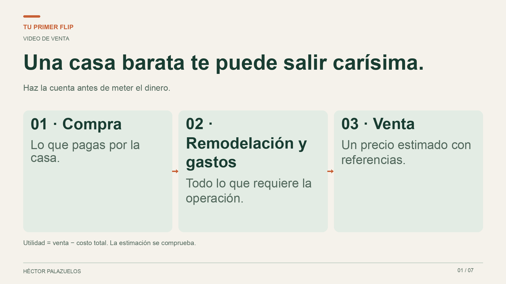
Después de decir la primera frase a cámara. Mantén tu voz mientras aparece la lámina.
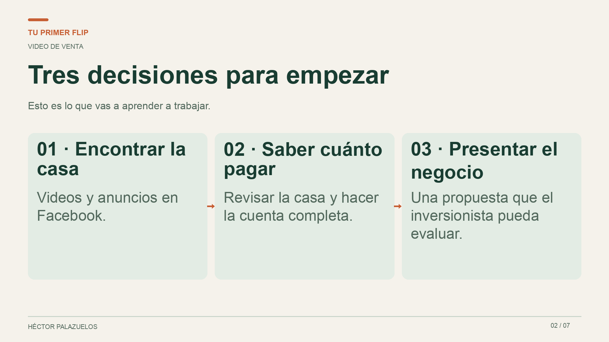
Cuando digas «dónde encuentro las casas, cuánto puedo pagar y cómo le presento el negocio a un inversionista».
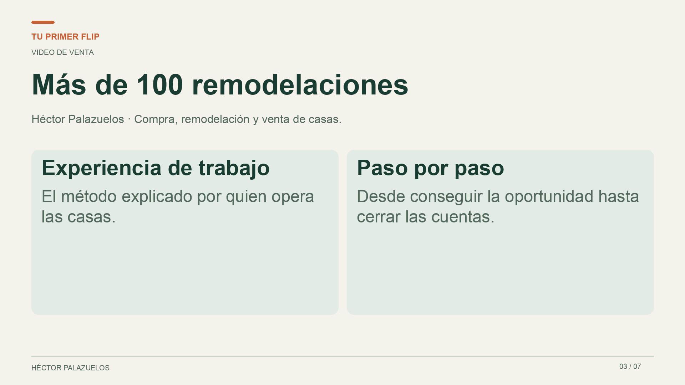
Al presentarte y mencionar tus más de cien remodelaciones. Alterna con tomas reales de tus trabajos.
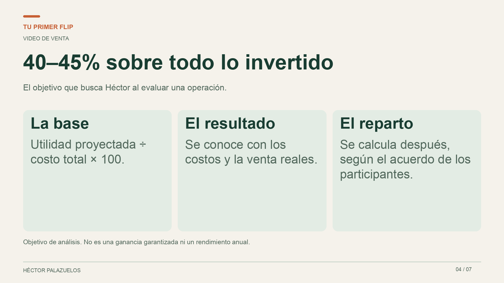
Cuando expliques tu objetivo del cuarenta al cuarenta y cinco por ciento. Conserva visible la aclaración.
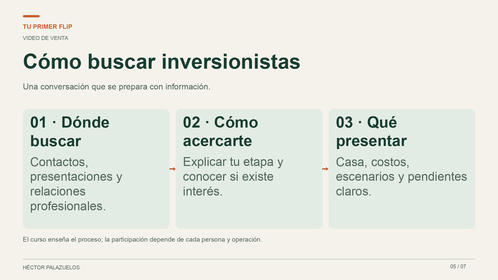
Durante el párrafo «cómo buscar inversionistas». Usa la propuesta de ejercicio como toma de apoyo.
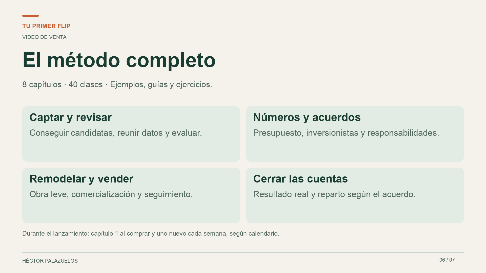
Cuando presentes el recorrido del curso y las entregas.
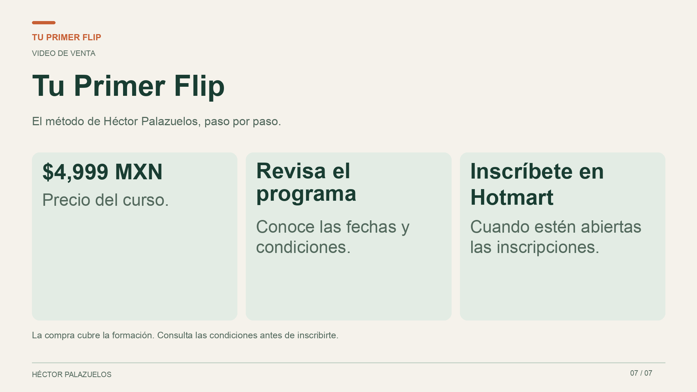
En el cierre de venta, después de anunciar el precio. No usar esta lámina en el avance previo a abrir inscripciones.
Vertical: 1080 × 1920 · Horizontal: 1920 × 1080. El ZIP también incluye SVG editables. Se conserva el estado de revisión del guion.
Mira, una casa barata te puede salir carísima. Lo que importa es cuánto te queda después de comprar, remodelar y vender. Y esa cuenta se hace antes de meter el dinero.
En este curso vamos a resolver lo que de verdad necesitas para arrancar: dónde encuentro las casas, cuánto puedo pagar y cómo le presento el negocio a un inversionista.
Soy Héctor Palazuelos. Vivo de comprar, remodelar y vender casas, y he realizado más de cien remodelaciones. En Tu Primer Flip te voy a enseñar cómo trabajo yo, paso por paso.
Vamos a empezar por la captación: cómo uso videos y anuncios en Facebook para que lleguen dueños que quieren vender. Qué les pregunto y cómo elijo las casas que vale la pena revisar.
Después abrimos los números: compra, remodelación, gastos y posible precio de venta. En mis análisis busco del cuarenta al cuarenta y cinco por ciento sobre todo lo invertido. Es mi objetivo al evaluar; la ganancia real depende de los costos y de cómo termine la venta.
Y vamos a trabajar algo que sé que te interesa: cómo buscar inversionistas. Dónde localizarlos, cómo empezar la conversación y qué propuesta llevarles para que puedan evaluar la oportunidad contigo.
También vamos a revisar la casa y sus documentos, organizar una remodelación leve con el apoyo del arquitecto, preparar la venta y cerrar las cuentas para saber cuánto quedó y cómo se reparte.
Quiero que puedas sentarte frente a una oportunidad y saber qué preguntar, qué calcular y cuándo dejarla pasar.
Son ocho capítulos y cuarenta clases, con ejemplos, guías y ejercicios para que vayas trabajando tu propia evaluación. Empiezas con el capítulo uno y recibes uno nuevo cada semana.
Si quieres entrar a este negocio, empieza aprendiendo a evaluar una operación completa.
Tu Primer Flip cuesta cuatro mil novecientos noventa y nueve pesos mexicanos.
Entra al enlace, revisa el programa y las fechas e inscríbete en Hotmart. Te voy a enseñar las decisiones que hay detrás de mis casas. Vamos a trabajar tu primer flip.
El cierre de inscripción se utiliza cuando la oferta, las entregas, las condiciones y el enlace estén listos. Mientras se prepara el lanzamiento, se puede grabar el cierre alternativo de avance. No se ha activado una campaña de venta. El capítulo 1 debe estar cargado y revisado antes de usar el cierre de inscripción.
Héctor hablando a cámara, alternando con tomas de sus casas y remodelaciones.
Los tiempos son orientativos; ajustar después del ensayo.
| Tiempo | Qué mostrar | Texto de apoyo |
|---|---|---|
| 0–16 s | Una casa barata puede salir carísima Héctor a cámara desde la primera palabra. Después de la primera frase, lámina 01 mientras continúa la voz. | Haz la cuenta antes de meter el dinero |
| 16–31 s | Las tres decisiones que interesan al comprador Lámina 02 y regreso breve a Héctor; conservar la voz de la toma principal. | Encontrar la casa · Saber cuánto pagar · Presentar el negocio |
| 31–46 s | Credibilidad y presentación del curso Héctor a cámara, lámina 03 y tomas reales de sus remodelaciones. | Héctor Palazuelos · Más de 100 remodelaciones |
| 46–65 s | Captación que lleva a revisar casas Tomas propias de una casa y ejemplo de ficha de contacto. | Videos en Facebook · Preguntas al dueño · Selección de candidatas |
| 65–89 s | La cuenta completa Lámina 04 al mencionar el objetivo; conservar su aclaración visible. | 40–45% sobre lo invertido · Objetivo de análisis |
| 89–109 s | Cómo acercarse a un inversionista Lámina 05 y propuesta de ejercicio sin datos privados. | Dónde buscar · Cómo acercarte · Qué presentar |
| 109–151 s | Obra, venta, cuentas y programa Tomas reales de obra y lámina 06; mostrar una guía del curso. | 8 capítulos · 40 clases · Un capítulo nuevo cada semana |
| 151–180 s | Precio y siguiente paso Volver a Héctor y usar lámina 07 al anunciar precio. En avance, sustituir cierre y omitir la lámina de inscripción. | Tu Primer Flip · $4,999 MXN · Revisa programa y fechas |
Sustituye únicamente el primer párrafo del guion; conserva todo lo demás.
Mira, si quieres hacer un flip con un inversionista, necesitas llegar con algo que pueda revisar: una casa, una cuenta completa y una propuesta clara. Esa preparación empieza mucho antes de pedirle dinero.
Conservar el guion hasta «Si quieres entrar a este negocio, empieza aprendiendo a evaluar una operación completa». Sustituir los dos últimos párrafos, precio e inscripción, por el cierre de avance. No usar la lámina de inscripción ni anunciar inscripciones abiertas hasta comprobar Hotmart y las entregas.
Estoy preparando Tu Primer Flip. Si quieres conocer el programa, escríbeme «FLIP». Las inscripciones todavía no están abiertas.
Se revisaron las imágenes de Casa Martha y se localizó un inventario de cuatro clips antiguos. No se incorporaron automáticamente al anuncio. La selección final de tomas se hará con la grabación de Héctor y los originales de apoyo que elija; duración y audio de los MP4 antiguos no se validaron.
Despertar interés con el costo de una mala evaluación y mostrar tres aprendizajes concretos: captar casas, decidir cuánto pagar y presentar una oportunidad a un inversionista. Conducir a revisar el programa y comprar cuando la oferta esté lista.
Personas interesadas en aprender a operar un flip, que quieren entender por dónde empezar y cómo trabajar con inversionistas. La primera comunicación puede dirigirse a quienes ya conocen el trabajo de Héctor en sus redes.
Una pieza principal para redes y la página del curso. El anuncio A usa este guion. El B cambia únicamente el primer párrafo para comparar dos comienzos; conserva cuerpo, precio y destino.
Meta: Reels en vertical, audio y zona visible. Referencia para el formato 9:16, el audio y los mensajes dentro de la zona visible. No se trasladan sus resultados estadísticos como una promesa para este curso.
Meta Blueprint: objetivo, destino y resultado buscado. Apoyo para alinear el objetivo de la campaña con el resultado que se quiere medir.
Tu Primer Flip · 8 capítulos · 40 clases · $4,999 MXN.
Usar estas piezas cuando la inscripción esté abierta y las condiciones de acceso estén completas.
Video principal: Héctor a cámara con tomas de sus casas y remodelaciones. Duración orientativa de 150–180 segundos; ajustar al ensayar.
Guion hablado único: 02-VIDEO-DE-VENTA.txt. También se lee en Venta → Video de venta. Usarlo completo. Apertura: «Mira, una casa barata te puede salir carísima. Lo que importa es cuánto te queda después de comprar, remodelar y vender. Y esa cuenta se hace antes de meter el dinero.».
Texto del anuncio: Antes de poner dinero en una casa, aprende a revisar cuánto podría dejar. Soy Héctor Palazuelos: vivo de comprar, remodelar y vender casas y he realizado más de 100 remodelaciones. En Tu Primer Flip te enseño cómo consigo oportunidades por Facebook, hago los números y organizo el proceso. También aprenderás dónde buscar inversionistas y qué propuesta presentarles. Son 8 capítulos y 40 clases, con ejemplos y guías, por $4,999 MXN. Empiezas con el capítulo 1 y recibes uno nuevo cada semana. Conoce el programa, las fechas y las condiciones.
Título: Tu Primer Flip · Método paso a paso.
Botón: Más información.
Destino: página del curso en Hotmart, con oferta y calendario completos.
Identificador para el registro: A-casa-inversionista.
Usar el mismo cuerpo, las mismas tomas posteriores, el precio, el texto del anuncio, el título y el destino del anuncio A. Cambiar solo el primer párrafo hablado por:
«Mira, si quieres hacer un flip con un inversionista, necesitas llegar con algo que pueda revisar: una casa, una cuenta completa y una propuesta clara. Esa preparación empieza mucho antes de pedirle dinero.».
Después continuar desde «En este curso vamos a resolver lo que de verdad necesitas para arrancar» con 02-VIDEO-DE-VENTA.txt. El nuevo inicio se graba con el mismo encuadre y ritmo del original.
Identificador para el registro: B-propuesta-inversionista.
La prueba compara dos aperturas propuestas. Ninguna se presenta como anuncio ganador antes de medir. Si Meta distribuye el gasto de forma desigual, interpretar las diferencias con esa limitación; una comparación causal requiere la herramienta de prueba correspondiente y presupuesto suficiente.
Texto orgánico preparado, todavía no publicado:
Estoy preparando Tu Primer Flip: mi forma de conseguir casas, revisar los números, buscar inversionistas, organizar la remodelación y vender. Son 8 capítulos y 40 clases, con explicaciones directas y ejercicios. Si te interesa conocer el programa, escríbeme «FLIP». Las inscripciones todavía no están abiertas.
Para el video de avance, conservar el guion hasta «Si quieres entrar a este negocio, empieza aprendiendo a evaluar una operación completa» y sustituir los dos últimos párrafos, precio e inscripción, por el cierre de avance que aparece en Venta → Video de venta. Así la llamada a la acción coincide con el estado del lanzamiento.
Respuesta preparada para quien pida información del avance: «Gracias por tu interés. Tu Primer Flip explica mi método en 8 capítulos y 40 clases. El precio previsto es $4,999 MXN. Estamos preparando las clases y el calendario; todavía no están abiertas las inscripciones. ¿Qué parte te interesa más: encontrar casas, revisar los números o trabajar con inversionistas?».
Registrar esas dudas para aclararlas en la página. Contestar esta conversación no autoriza añadir a la persona a un grupo ni a envíos recurrentes.
Ya puedes inscribirte a Tu Primer Flip.
Te voy a enseñar cómo hago este negocio: cómo consigo casas con anuncios de Facebook, reviso los números, busco inversionistas, les presento una propuesta y preparo el trato. Después trabajamos la remodelación, la venta y el cierre de cuentas.
Son 8 capítulos y 40 clases. Empieza con el capítulo 1 y recibe un capítulo nuevo cada semana. Explicaciones sencillas, ejemplos y prácticas para que vayas preparando tus siguientes pasos.
El curso cuesta $4,999 MXN. Aquí puedes consultar el temario, las fechas de entrega y las condiciones de acceso: [ENLACE DE LA PÁGINA DEL CURSO].
Nombre: Tu Primer Flip.
Subtítulo: Aprende cómo consigo, reviso, remodelo y vendo casas, paso por paso.
Presentación breve: El método de Héctor Palazuelos, explicado en 8 capítulos y 40 clases, con ejemplos y guías para trabajar cada parte de una operación.
Precio: $4,999 MXN.
Entrega: capítulo 1 disponible al aprobarse la compra, seguido de un capítulo nuevo cada semana según el calendario de la generación.
Temario: usar los cuarenta títulos de materiales/curso/TEMARIO.txt. La página pública debe indicar la disponibilidad y las fechas de entrega; las notas internas de producción se quedan en la carpeta de trabajo.
• Entender el negocio y organizar tu primer paso.
• Conseguir oportunidades con Facebook y anuncios de video.
• Revisar una casa y hacer la cuenta completa.
• Buscar inversionistas, preparar el primer contacto, presentar la propuesta y dar seguimiento hasta definir los acuerdos con el dueño y el inversionista.
• Organizar una remodelación leve y controlar sus gastos.
• Preparar la venta y dar seguimiento a los interesados.
• Cerrar las cuentas y explicar el reparto según el acuerdo.
• Relacionar todo el proceso con el flip que Héctor elija.
¿Cuántas clases tiene el curso?
El programa tiene 40 clases distribuidas en 8 capítulos. En el temario puedes ver el nombre de cada una.
¿Qué necesito para empezar?
Tiempo para estudiar, hacer los ejercicios y reunir información de las oportunidades que quieras analizar. Puedes empezar a aprender aunque todavía no tengas una casa identificada.
¿El curso incluye dinero para comprar una casa?
La inscripción cubre la formación. Vas a aprender a preparar una propuesta para un inversionista; su participación depende de la operación y del acuerdo que se consiga.
¿Voy a trabajar con ejemplos?
Sí. Las clases combinan explicación, ejemplo y práctica. El último capítulo reúne lo aprendido con un flip elegido por Héctor.
¿Cuánto cuesta y dónde me inscribo?
El precio es de $4,999 MXN y la inscripción se prepara en Hotmart.
¿Cuándo puedo ver las clases?
El capítulo 1 estará disponible al aprobarse tu compra. Después se liberará un capítulo nuevo cada semana según el calendario de la generación. La página debe mostrar las fechas exactas y el plazo de acceso antes de abrir inscripciones.
¿Se garantizan ganancias?
No. Aprenderás a estudiar y organizar una operación. Los costos, los acuerdos y las condiciones de cada casa pueden cambiar el resultado.
¿Qué garantía y cuánto tiempo de acceso tendré?
Estos datos están por definir. Sustituir esta respuesta interna por las condiciones concretas antes de publicar la página.
Gracias por escribirme. Tu Primer Flip tiene 8 capítulos y 40 clases donde te enseño mi forma de conseguir y revisar casas, hacer los números, organizar el trato, la remodelación y la venta. Cuesta $4,999 MXN. Aquí puedes consultar el temario, las fechas de entrega y las condiciones: [ENLACE DE LA PÁGINA DEL CURSO]. Si te queda una duda después de verlo, dime y la revisamos.
Grabar dos tomas del guion único en el archivo 02, la apertura B por separado y los dos cierres según la etapa. El orden de tomas está en Venta → Video de venta. Descargar los apoyos desde la sección Láminas y apoyos del video y seguir su guía de edición. Mostrar las guías o las láminas actuales como muestra del material; no presentarlas como grabaciones ya disponibles de todas las clases.
Comprobar el total de $4,999 en Hotmart antes de grabar la toma del precio. La disponibilidad, las entregas y las condiciones deben quedar visibles en la página antes de abrir inscripciones.
Las inscripciones continúan. Cuando termine la oferta de apertura, actualizar precio, video, texto y enlace con el precio regular confirmado. Mientras se graba el programa, cada comprador recibe los capítulos ya publicados y el calendario pendiente. Una vez completo, el anuncio dice curso pregrabado disponible y elimina la promesa de nuevas entregas semanales.
Propuesta de urgencia: termina el precio de lanzamiento el 27 de septiembre, a las 23:59 de Culiacán; desde el 28, $6,999 si Héctor lo confirma. No publicar ese cambio antes de aceptarlo y configurarlo.
Datos fijados: Tu Primer Flip · 8 capítulos · 40 clases · $4,999 MXN.
Referencia para todas las clases: el capítulo 1 aprobado.
Apertura propuesta: lunes 21 de septiembre de 2026; confirmar tras revisión del día 20.
Fin propuesto del precio de lanzamiento: domingo 27 de septiembre, 23:59, hora de Culiacán. La venta continúa.
Precio regular propuesto desde el 28: $6,999; confirmar antes de anunciar el cambio.
Fecha comprobada de apertura del acceso: ____________________
Modalidad confirmada: capítulo 1 disponible al aprobarse la compra; un capítulo adicional por semana.
Calendario propuesto: capítulos 2–8 cada lunes del 28 de septiembre al 9 de noviembre.
Fecha de entrega de cada capítulo: ____________________
Plazo de acceso a clases y guías: ____________________
Contacto y condiciones de soporte: ____________________
☐ Hotmart tiene ocho capítulos con los mismos cuarenta títulos del temario.
☐ La disponibilidad de clases y guías coincide con lo que informa la página.
☐ Cada entrega pendiente tiene fecha informada antes de comprar.
☐ Las cuatro clases y guías del capítulo 1 están grabadas, cargadas y revisadas como alumno antes de cobrar.
☐ Agenda de producción y revisión reservada para cada entrega pendiente.
☐ Mismo calendario y disponibilidad visibles en página, video, anuncio y checkout.
☐ Al terminar el lanzamiento, retirar la oferta promocional y comprobar la oferta regular y los enlaces directos. Mantener las inscripciones.
☐ Nuevos alumnos reciben lo ya publicado y conocen las entregas pendientes.
☐ Al completar el curso, actualizar el mensaje para vender los pregrabados completos.
☐ Cualquier acompañamiento adicional está definido expresamente por Héctor.
Precio anunciado: $4,999 MXN.
Precio base configurado: ____________________
Impuestos que muestra el checkout: ____________________
Total al contado comprobado: ____________________
Medios de pago y sus condiciones: ____________________
☐ El total al contado coincide con los $4,999 anunciados.
☐ El enlace abre la oferta correcta.
☐ Descripción, video, anuncios y página usan el programa vigente.
Plazo de garantía configurado: ____________________
Desde cuándo se cuenta: ____________________
Texto que verá el comprador: ____________________
Comprobar las condiciones en la cuenta y mostrarlas antes de comprar. La ayuda de Hotmart describe opciones de 7, 15, 21 o 30 días y el plazo a partir del primer pago.
Fuentes: https://help.hotmart.com/es/article/360034552751/-como-ajustar-el-plazo-de-garantia-del-producto-que-he-creado-
https://help.hotmart.com/es/article/360038569752/-como-puedo-cancelar-mi-compra-
☐ Garantía, calendario y plazo de acceso visibles.
☐ Correo y acceso del alumno comprobados con las herramientas de prueba disponibles.
Enlace del video de venta: ____________________
Página del producto: ____________________
Enlace de pago: ____________________
☐ Descripción vigente cargada.
☐ Héctor ensayó y grabó el guion principal a cámara.
☐ Seleccionadas sus tomas de casas y remodelaciones para apoyar cada idea.
☐ Montaje principal y apertura B revisados, con voz, subtítulos y precio legibles.
☐ El cierre corresponde a la etapa: pedir información antes de abrir o inscripción cuando esté lista.
☐ Preguntas de fecha, acceso y garantía completadas.
☐ Página y pago revisados en teléfono.
Cuenta publicitaria y página: ____________________
Conjunto de datos o píxel: ____________________
Presupuesto total elegido: ____________________
Inicio y fin de la campaña: ____________________
☐ Objetivo, categoría y público revisados en la cuenta.
☐ Los anuncios muestran $4,999 y el programa de 40 clases.
☐ Enlaces, vistas previas y origen de visitas comprobados.
☐ Compras aprobadas separadas de órdenes pendientes.
Periodo y anuncio: ____________________
Gasto: ____________________
Reproducciones y atención al inicio: ____________________
Clics hacia la página: ____________________
Visitas reales a la página: ____________________
Inicios de pago: ____________________
Compras aprobadas: ____________________
Reembolsos: ____________________
Ingreso neto reconocido: ____________________
Dudas recibidas y siguiente ajuste: ____________________
Costo por compra aprobada = gasto de anuncios ÷ compras aprobadas.
Si no hay compras, registrar «todavía sin compras». Revisar el costo junto con el ingreso neto antes de aumentar el presupuesto.
Selecciona el guion. Puedes editarlo antes de grabar. El QR abre el guion publicado en el celular; tus correcciones se guardan en el navegador donde las hagas.
Escanea el QR con la cámara del celular o abre la cámara aquí en la Mac. No necesitas abrir ninguna otra app.
El enlace abre directamente en Safari o Chrome, sin iniciar sesión en Claude. Después toca Abrir cámara y leer y permite cámara y micrófono. Al terminar, pulsa DETENER. En la pantalla de revisión, Guardar video permite guardarlo en Fotos desde la hoja de compartir del iPhone, o descargarlo en la Mac.
Sin internet, en la Mac también sirve la copia local del teleprompter.
Video de venta · Tu Primer Flip
7 láminas. Descarga el paquete completo o elige imágenes sueltas. Agrégalas en tu editor después de grabar.
Después de decir la primera frase a cámara. Mantén tu voz mientras aparece la lámina.
Cuando digas «dónde encuentro las casas, cuánto puedo pagar y cómo le presento el negocio a un inversionista».
Al presentarte y mencionar tus más de cien remodelaciones. Alterna con tomas reales de tus trabajos.
Cuando expliques tu objetivo del cuarenta al cuarenta y cinco por ciento. Conserva visible la aclaración.
Durante el párrafo «cómo buscar inversionistas». Usa la propuesta de ejercicio como toma de apoyo.
Cuando presentes el recorrido del curso y las entregas.
En el cierre de venta, después de anunciar el precio. No usar esta lámina en el avance previo a abrir inscripciones.
Vertical: 1080 × 1920 · Horizontal: 1920 × 1080. El ZIP también incluye SVG editables. Se conserva el estado de revisión del guion.
Clase 1.1 · Cómo funciona un flip
3 láminas. Descarga el paquete completo o elige imágenes sueltas. Agrégalas en tu editor después de grabar.
Al explicar «El recorrido de un flip». Sigue el orden de la guía de esta clase.
Al explicar «Quién participa». Sigue el orden de la guía de esta clase.
Al explicar «Te llega un mensaje…». Sigue el orden de la guía de esta clase.
Vertical: 1080 × 1920 · Horizontal: 1920 × 1080. El ZIP también incluye SVG editables. Se conserva el estado de revisión del guion.
Clase 1.2 · Qué aporto yo y qué aporta el inversionista
4 láminas. Descarga el paquete completo o elige imágenes sueltas. Agrégalas en tu editor después de grabar.
Al explicar «Trabajo, dinero y acuerdos». Sigue el orden de la guía de esta clase.
Al explicar «La cuenta sobre todo lo invertido». Sigue el orden de la guía de esta clase.
Al explicar «Si cambia el costo, cambia el resultado». Sigue el orden de la guía de esta clase.
Al explicar «Primero entiende la cuenta». Sigue el orden de la guía de esta clase.
Vertical: 1080 × 1920 · Horizontal: 1920 × 1080. El ZIP también incluye SVG editables. Se conserva el estado de revisión del guion.
Clase 1.3 · Con quién trabajo
3 láminas. Descarga el paquete completo o elige imágenes sueltas. Agrégalas en tu editor después de grabar.
Al explicar «Cómo me organizo yo». Sigue el orden de la guía de esta clase.
Al explicar «Una tarea bien pedida». Sigue el orden de la guía de esta clase.
Al explicar «Antes de elegir un colaborador». Sigue el orden de la guía de esta clase.
Vertical: 1080 × 1920 · Horizontal: 1920 × 1080. El ZIP también incluye SVG editables. Se conserva el estado de revisión del guion.
Clase 1.4 · Cómo empieza el alumno
3 láminas. Descarga el paquete completo o elige imágenes sueltas. Agrégalas en tu editor después de grabar.
Al explicar «Tu punto de partida». Sigue el orden de la guía de esta clase.
Al explicar «Una carpeta por casa». Sigue el orden de la guía de esta clase.
Al explicar «Tu primer ensayo de video». Sigue el orden de la guía de esta clase.
Vertical: 1080 × 1920 · Horizontal: 1920 × 1080. El ZIP también incluye SVG editables. Se conserva el estado de revisión del guion.
Clase 2.1 · Qué casas busco y qué tiene que dejarme la operación
2 láminas. Descarga el paquete completo o elige imágenes sueltas. Agrégalas en tu editor después de grabar.
Al explicar los tres filtros de la clase.
Cuando digas «Imagina una operación cuyo costo total termina en un millón de pesos».
Vertical: 1080 × 1920 · Horizontal: 1920 × 1080. El ZIP también incluye SVG editables. Se conserva el estado de revisión del guion.
Clase 2.2 · El video con el que empiezo a captar
2 láminas. Descarga el paquete completo o elige imágenes sueltas. Agrégalas en tu editor después de grabar.
Cuando dividas el anuncio en tres partes.
Al explicar cómo revisar el video y preparar una segunda versión.
Vertical: 1080 × 1920 · Horizontal: 1920 × 1080. El ZIP también incluye SVG editables. Se conserva el estado de revisión del guion.
Clase 2.3 · Cómo preparo el anuncio en Meta Ads, incluida la segmentación
2 láminas. Descarga el paquete completo o elige imágenes sueltas. Agrégalas en tu editor después de grabar.
Cuando nombres campaña, conjunto y anuncio.
Durante la revisión de segmentación, presupuesto y mensaje inicial.
Vertical: 1080 × 1920 · Horizontal: 1920 × 1080. El ZIP también incluye SVG editables. Se conserva el estado de revisión del guion.
Clase 2.4 · Qué información pido cuando llega un contacto
2 láminas. Descarga el paquete completo o elige imágenes sueltas. Agrégalas en tu editor después de grabar.
Al presentar las cinco cosas que pedirás al contacto.
Cuando expliques el objetivo de la conversación.
Vertical: 1080 × 1920 · Horizontal: 1920 × 1080. El ZIP también incluye SVG editables. Se conserva el estado de revisión del guion.
Clase 2.5 · Cómo preparo la visita y la revisión de una casa
2 láminas. Descarga el paquete completo o elige imágenes sueltas. Agrégalas en tu editor después de grabar.
Al explicar qué llevas y qué observas en la casa.
Cuando enumeres las tres acciones al terminar la visita.
Vertical: 1080 × 1920 · Horizontal: 1920 × 1080. El ZIP también incluye SVG editables. Se conserva el estado de revisión del guion.
Clase 2.6 · Cómo sé si la captación está funcionando
2 láminas. Descarga el paquete completo o elige imágenes sueltas. Agrégalas en tu editor después de grabar.
Al unir lo que se gastó con las casas que vale la pena revisar.
Cuando compares las dos pruebas de mil pesos.
Vertical: 1080 × 1920 · Horizontal: 1920 × 1080. El ZIP también incluye SVG editables. Se conserva el estado de revisión del guion.
Clase 4.1 · Dónde buscar inversionistas y cómo elegir a quién acercarme
2 láminas. Descarga el paquete completo o elige imágenes sueltas. Agrégalas en tu editor después de grabar.
Cuando expliques los tres caminos para buscar inversionistas.
Al explicar monto, tiempo, riesgo y participación.
Vertical: 1080 × 1920 · Horizontal: 1920 × 1080. El ZIP también incluye SVG editables. Se conserva el estado de revisión del guion.
Clase 4.2 · Cómo hacer el primer contacto y saber si hay interés
2 láminas. Descarga el paquete completo o elige imágenes sueltas. Agrégalas en tu editor después de grabar.
Durante los ejemplos de primer mensaje.
Cuando expliques el registro del seguimiento.
Vertical: 1080 × 1920 · Horizontal: 1920 × 1080. El ZIP también incluye SVG editables. Se conserva el estado de revisión del guion.
Clase 4.3 · Cómo preparo una propuesta que se pueda revisar
2 láminas. Descarga el paquete completo o elige imágenes sueltas. Agrégalas en tu editor después de grabar.
Al presentar la estructura de la propuesta.
Cuando muestres qué pasa si cambian la venta y los costos.
Vertical: 1080 × 1920 · Horizontal: 1920 × 1080. El ZIP también incluye SVG editables. Se conserva el estado de revisión del guion.
Clase 4.4 · Cómo presento la oportunidad, respondo dudas y doy seguimiento
2 láminas. Descarga el paquete completo o elige imágenes sueltas. Agrégalas en tu editor después de grabar.
Al ensayar la presentación de cinco puntos.
Cuando hables de las dudas y del siguiente contacto.
Vertical: 1080 × 1920 · Horizontal: 1920 × 1080. El ZIP también incluye SVG editables. Se conserva el estado de revisión del guion.
Clase 4.5 · Cómo acordamos aportaciones, responsabilidades y reparto
2 láminas. Descarga el paquete completo o elige imágenes sueltas. Agrégalas en tu editor después de grabar.
Al separar las tres cuentas de la operación.
Cuando expliques el ejemplo de reparto por mitades.
Vertical: 1080 × 1920 · Horizontal: 1920 × 1080. El ZIP también incluye SVG editables. Se conserva el estado de revisión del guion.
Clase 4.6 · Cómo negocio con el dueño y preparo los acuerdos
2 láminas. Descarga el paquete completo o elige imágenes sueltas. Agrégalas en tu editor después de grabar.
Al explicar los tres pasos para preparar la conversación.
Durante el ejemplo en que el dueño pide cincuenta mil pesos más.
Vertical: 1080 × 1920 · Horizontal: 1920 × 1080. El ZIP también incluye SVG editables. Se conserva el estado de revisión del guion.
Clase 4.7 · Qué revisamos antes de firmar, aportar y empezar
2 láminas. Descarga el paquete completo o elige imágenes sueltas. Agrégalas en tu editor después de grabar.
Al presentar las cuatro revisiones del cierre del capítulo.
Cuando resumas los entregables antes de pasar a remodelación.
Vertical: 1080 × 1920 · Horizontal: 1920 × 1080. El ZIP también incluye SVG editables. Se conserva el estado de revisión del guion.
Haz clic o toca el texto para escribir, agregar palabras o borrar. Se guarda automáticamente en este navegador. Para usar tus cambios en otro dispositivo, copia el texto y pégalo en el teleprompter de ese dispositivo.
Aquí dejamos lo que terminamos, lo que falta y el siguiente paso al cerrar cada sesión.
En el mismo teleprompter, guarda o elimina cualquier toma pendiente, cierra la cámara y toca ↻ Actualizar. El texto comienza abajo y sube. Después de detener, puedes guardar, comprobar tu copia, grabar otra o eliminar la toma.
Abrir GrabarRegistro actualizado: 2026-09-18. Se actualiza al cerrar cada sesión de trabajo.
Para ti que quieres aprender a hacer tu primer flip.
Te enseño el método con el que trabajo,
de encontrar la casa a cerrar la venta.
Cómo capto oportunidades en Facebook, hago los números, busco inversionistas y organizo la remodelación para salir a vender.
![Héctor Palazuelos]()
Más de 100 casas remodeladas.
Culiacán · Monterrey · Los Mochis
Curso completo · Un capítulo inicial y nuevas entregas semanales.
Las casas detrás del método
“Vivo de comprar, remodelar y vender casas. Este es mi oficio.”
Estas son dos de las casas que he trabajado. En el curso te explico qué reviso, cómo organizo la operación y cómo tomo las decisiones.
![Fachada de Casa Lomas durante los trabajos, con escombro y un trabajador.]()
![Fachada terminada de Casa Lomas, con portón y muros pintados.]()
![Patio de Casa Alvarado durante los trabajos, con materiales y muros sin terminar.]()
![Patio terminado de Casa Alvarado, con piso despejado y muros pintados.]()
Fotogramas del trabajo de Héctor. El capítulo 8 desarrollará un flip elegido para explicar todo el proceso.
Lo que vas a aprender
Prepara videos y anuncios en Facebook, atiende a los dueños y reúne la información que necesitas para dar el siguiente paso.
Estudia la casa, sus documentos, el precio de venta y todos los costos. Aprende a reconocer cuándo pedir más información o dejar pasar.
Trabaja dónde buscar, cómo iniciar la conversación y qué propuesta llevar. Define aportaciones, responsabilidades y reparto.
Planea mejoras leves, controla los gastos, atiende compradores y cierra las cuentas para conocer el resultado real.
Vamos a revisar dónde puede estar la utilidad, qué gastos debes considerar y cuándo conviene dejar pasar una casa.
Capítulo 4 · Siete clases
Ese tema lo vamos a trabajar paso a paso. Desde a quién acercarte hasta cómo presentar la oportunidad y preparar los acuerdos.
El programa completo
De la primera conversación con un dueño al cierre de cuentas.
Abre cada capítulo para conocer sus clases.
Guía de trabajo: mapa de la operación y plan personal de arranque.
Guía de trabajo: ficha de captación, mensajes y registro de seguimiento.
Guía de trabajo: revisión y corrida de números con escenarios.
Guía de trabajo: mapa de contactos, mensajes, propuesta, seguimiento y preparación del acuerdo.
Guía de trabajo: alcance, presupuesto, acuerdo y bitácora de obra.
Guía de trabajo: plan de venta, seguimiento de compradores y preparación de cierre.
Guía de trabajo: conciliación y cierre de cuentas.
Guía de trabajo: lectura del caso y aplicación al expediente del alumno.
Si te incorporas después, tendrás los capítulos ya publicados y recibirás los pendientes conforme se liberen. Al terminar las entregas, el programa seguirá a la venta como curso pregrabado.
Publicaremos las fechas y las condiciones de acceso antes de abrir inscripciones.
Explicación, ejemplo y práctica
Te lo explico de forma sencilla. En cada clase vas a encontrar una idea, un ejemplo y una tarea para trabajar con tus datos o con el caso de práctica.
Conoce cómo enseño
“Lo que quiero es que entiendas qué estoy viendo cuando digo: «Esta casa sí me interesa».”
Puedes leer el inicio de la primera clase antes de decidir.
Extracto escrito de la clase.
Quién te va a enseñar
He realizado más de cien remodelaciones. Me encargo de encontrar las casas, revisar el negocio y coordinar el proceso hasta la venta. Para las remodelaciones trabajo con un arquitecto.
Eso es lo que quiero enseñarte: cómo conecto cada parte para tomar decisiones y llevar el control.
Este curso es para ti si…
Puedes empezar a estudiar sin haber comprado una casa. Llevar una operación a la práctica sí requiere capital, tiempo y acuerdos.
Tu Primer Flip · Curso completo
Captación, números, inversionistas, remodelación y venta.
Con ejemplos, ejercicios y guías para trabajar cada etapa.
Capítulo 1: recorrido del negocio, participantes y plan de arranque.
Capítulo 2: video, anuncio, segmentación, ficha del dueño y seguimiento.
Capítulo 3: documentos, estado de la casa, costos, escenarios y oferta.
Capítulo 4: contactos, mensajes, presentación, objeciones y acuerdos.
Capítulo 5: alcance, presupuestos, pagos, avances e imprevistos.
Capítulos 6 y 7: compradores, negociación, preparación del cierre y reparto.
Capítulo 8: decisiones, ajustes y aprendizajes de un flip elegido por Héctor.
Precio del curso completo
$4,999 MXN8 capítulos · 40 clases
Ejercicios y guías de trabajo
Un capítulo para empezar.
Una nueva entrega cada semana.
Estamos preparando la apertura. Pregúntame por el curso y conoce los detalles.
Preguntar por la aperturaTe lleva a mi perfil de Instagram.
Esta vista previa todavía no recibe pagos.
Hay programas inmobiliarios de más de $40,000 con otro formato y alcance. Estas son dos opciones distintas:
40 clases grabadas sobre el método de Héctor. Captación, análisis, inversionistas, remodelación y venta, con ejercicios y guías.
Negocios Inmobiliarios: Estrategia e Innovación. 80 horas en 32 sesiones en vivo; constancia sujeta a requisitos.
Consultar el programa y sus condicionesReferencia consultada el 17 de septiembre de 2026. Son productos diferentes: el precio del diplomado no es un precio anterior ni un valor equivalente de Tu Primer Flip.
Antes de empezar
Sí puedes empezar a aprender. El capítulo 1 explica cómo funciona el negocio, quién participa y cómo organizar tus primeros pasos. Vas a necesitar tiempo para estudiar y hacer los ejercicios.
Sí. El capítulo 4 desarrolla dónde buscarlos, cómo acercarte, qué propuesta presentar, cómo responder dudas y dar seguimiento. También estudia aportaciones, responsabilidades y reparto. Su participación depende de la operación y de los acuerdos que se consigan.
Puedes estudiar y practicar con los ejercicios sin haber comprado una casa. Para realizar una operación sí se necesita capital, trabajo y acuerdos; la inscripción al curso no financia un flip ni incluye un inversionista.
El curso explica cómo organizar una remodelación leve y trabajar con el equipo adecuado. Héctor lleva la operación y se apoya en un arquitecto para las remodelaciones. El curso no sustituye la preparación técnica de esos profesionales.
Ocho capítulos y cuarenta clases, con ejemplos, ejercicios y guías de trabajo. El último capítulo reúne el método en un flip real elegido por Héctor.
Estamos preparando la apertura. Durante el lanzamiento recibirás el capítulo 1 al aprobarse la compra y nuevas entregas semanales. Quien compre más adelante tendrá los capítulos ya publicados y el calendario de los pendientes. Al completar el programa, seguirá disponible como curso pregrabado. Publicaremos las fechas, el plazo de acceso y las condiciones antes de abrir inscripciones.
No. Aprenderás a estudiar y organizar operaciones. El resultado depende de los costos, los acuerdos y las condiciones de cada caso; también puede haber pérdidas.
Contenido educativo. Cada operación requiere revisión profesional según el caso. No se garantizan ingresos ni resultados.
Volver al inicio{kind=link}
{kind=link}
{kind=link}
{kind=link}
{kind=link}
{kind=link}
{kind=link}
{kind=link}
{kind=link}
{kind=link}
{kind=link}
{kind=link}
{kind=link}
{kind=link}
{kind=link}
{kind=link}
{kind=link}
{kind=link}
{kind=link}
{kind=link}
{kind=link}
{kind=link}
{kind=link}
{kind=link}
{kind=link}
{kind=link}
{kind=link}
{kind=link}
{kind=link}
{kind=link}
{kind=link}
{kind=link}
{kind=link}
{kind=link}
{kind=link}
{kind=link}
{kind=link}
{kind=link}
{kind=link}
{kind=link}
{kind=link}
{kind=link}
{kind=link}
{kind=link}
{kind=link}
{kind=link}
{kind=link}
{kind=link}
{kind=link}
{kind=link}
{kind=link}
{kind=link}
{kind=link}
{kind=link}
{kind=link}
{kind=link}
{kind=link}
{kind=link}
{kind=link}
{kind=link}
{kind=link}
{kind=link}
{kind=link}
{kind=link}
{kind=link}
{kind=link}
{kind=link}
{kind=link}
{kind=link}
{kind=link}
{kind=link}
{kind=link}
{kind=link}
{kind=link}
{kind=link}
{kind=link}
{kind=link}
{kind=link}
{kind=link}
{kind=link}
{kind=link}
{kind=link}
{kind=link}
{kind=link}
{kind=link}
{kind=link}
{kind=link}
{kind=link}
{kind=link}
{kind=link}
{kind=link}
{kind=link}